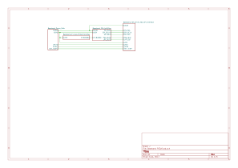
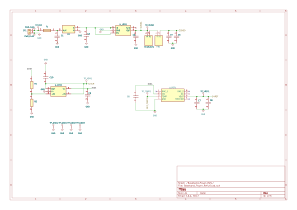
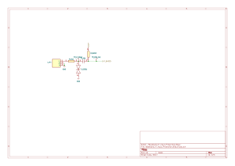
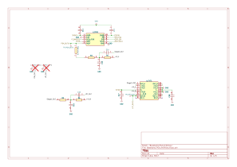
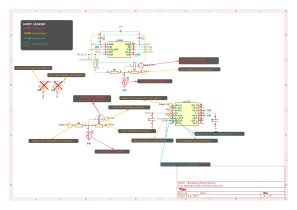
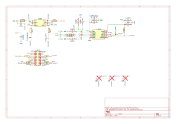

This document exists to answer "why?" at every level of the design - not just "what component was chosen" but "what physical principle made that the right choice, and what would happen if we chose differently."
Each section follows a consistent pattern:
Throughout, look for these tags:
PHYSICS First-principle derivation or physical reasoning
DECISION A specific design choice with rationale
TRADEOFF What was gained vs. what was sacrificed
RISK Known limitation or sensitivity requiring attention
Before diving into the baseband circuit, we need to understand the physics of the radar system it serves. Every design decision in this document - filter cutoff frequency, ADC sampling rate, gain range, bias voltage - traces back to the fundamental operating principles of Frequency-Modulated Continuous-Wave (FMCW) radar.
All radar systems measure distance by transmitting electromagnetic energy and timing how long it takes to return after reflecting off a target. The classic approach (pulsed radar) transmits a short burst and measures the round-trip delay directly. FMCW takes a fundamentally different approach: instead of measuring time, it measures frequency.
An FMCW transmitter continuously broadcasts a signal whose frequency sweeps linearly over time - a "chirp." When this chirp reflects off a target and returns to the receiver, it arrives delayed by the round-trip propagation time τ = 2R/c, where R is the target range and c is the speed of light.
Because the transmitter's frequency is continuously changing, the received signal's frequency is always slightly behind the currently-transmitted frequency. Mixing (multiplying) the transmitted and received signals produces an output whose frequency equals the difference between them. This difference - the beat frequency - is directly proportional to the target's range.
This is why FMCW is powerful: it converts a time measurement (nanoseconds of propagation delay, extremely difficult to measure precisely) into a frequency measurement (Hz to kHz, easily measured with standard electronics and FFT).
The transmitter generates a signal whose instantaneous frequency increases linearly from f0 to f0 + B over a sweep period Tsweep:
f(t) = f0 + (B / Tsweep) · twhere:
| Parameter | Symbol | Our System | Physical Meaning |
|---|---|---|---|
| Center frequency | f0 | 5.8 GHz (C-band, ISM) | Carrier frequency - determines antenna size, propagation, and regulatory band |
| Sweep bandwidth (original) | B | 30 MHz (FCC §15.245) | 5.785–5.815 GHz. Minimum legal bandwidth for the original HOTRODS design. |
| Sweep bandwidth (proposed) | B | 125 MHz (FCC §15.247 ISM) | 5.725–5.850 GHz ISM band. 4× wider bandwidth, 1 W max power. Same VCO, same baseband hardware. See §1.7.7. |
| Sweep period | Tsweep | ~5 ms (half-period of ~100 Hz triangular wave) | Duration of one up-ramp or down-ramp. Must be long enough to capture sufficient ADC samples for FFT-based range extraction (see note below). |
| Chirp slope (30 MHz) | S = B/Tsweep | 6 × 10⁹ Hz/s | Rate of frequency change at 30 MHz BW |
| Chirp slope (125 MHz) | S = B/Tsweep | 2.5 × 10¹⁰ Hz/s | Rate of frequency change at 125 MHz BW - 4× steeper slope produces higher beat frequencies for the same target range |
| Modulation waveform | — | Triangular (~100 Hz) | Up-ramp and down-ramp enable simultaneous range/velocity extraction (see §1.4) |
| VCO | — | HMC431LP4E, free-running | No PLL - 600 MHz tuning range covers both 30 MHz and 125 MHz sweep modes |
| Max transmit power (§15.245) | — | 75 mW (18.75 dBm) | FCC §15.245 maximum for 5.785–5.815 GHz. Current operating limit. |
| Max transmit power (§15.247) | — | 1 W (30 dBm) | FCC §15.247 spread spectrum in ISM band. 13 dB increase → ~2× detection range. |
Table 1.2: System parameters - chirp rate, bandwidth, VCO, and power limits
The HMC431LP4E VCO has a 600 MHz tuning range, but FCC regulations limit the radiated bandwidth. Under §15.245: 30 MHz (5.785–5.815 GHz). Under §15.247 ISM: 125 MHz (5.725–5.850 GHz). The MCU's DAC generates a triangular waveform at ~100 Hz whose amplitude determines how much of the VCO's tuning range is exercised. A larger DAC swing = wider sweep bandwidth. The baseband handles both modes without modification.
At 30 MHz, the VCO exercises only 5% of its tuning range - nonlinearity is negligible. At 125 MHz (~21% of range), nonlinearity becomes measurable but still modest. The free-running VCO remains acceptable for initial implementation; however, a PLL-based VCO control loop would provide better chirp linearity and is recommended as a future RF board upgrade if the 125 MHz mode reveals range measurement degradation in testing.
The original Rev A design used a 10 kHz triangular modulation waveform (Tramp = 50 µs), generated from a 96-element DAC lookup table via DMA on the STM32H743ZI. This rate was chosen for implementation convenience (timer prescaler settings) rather than being derived from signal processing requirements.
At 100 kS/s ADC sampling, a 50 µs ramp yields only 5 ADC samples per ramp. A 5-point FFT has effectively no frequency resolution - all beat frequencies from 0 to 20 kHz collapse into a single bin. The system could not have extracted meaningful range information even if the analog chain had worked perfectly.
Rev B corrects this by specifying a ~100 Hz chirp rate (Tramp ≈ 5 ms), yielding 500 samples per ramp - sufficient for a 512-point FFT with ~256 useful range bins. The chirp rate, ADC sample rate, and FFT length are a coupled three-parameter system; changing one requires checking the other two.
If the frequency sweep is nonlinear, the beat frequency for a single stationary target is no longer constant - it spreads across multiple FFT bins, reducing SNR and range resolution. Linearity of the chirp directly translates to the sharpness of the range measurement. In practice, VCO nonlinearity is the dominant source of range measurement error in low-cost FMCW systems.
Our system uses a free-running VCO (no PLL), which is a deliberate tradeoff: the original report notes that "a PLL would be a better choice due to higher frequency stability and better linearity across a frequency range." However, because we only use 30 MHz of the VCO's 600 MHz tuning range (5% of the full range), the nonlinearity over this small portion is negligible. The frequency drift is also common-mode - it shifts all three LO signals and the transmitted signal identically, so it cancels at the mixer output.
When the transmitted chirp reflects off a target at range R, it returns with a time delay:
τ = 2R / cDuring this delay, the transmitter's frequency has advanced by Δf = S · τ. The mixer multiplies the transmitted and received signals, and the low-frequency output (after filtering out the sum frequency) has a constant frequency equal to this difference:
fbeat = S · τ = (B / Tsweep) · (2R / c) = 2BR / (c · Tsweep)This is the fundamental equation of FMCW radar. Solving for range:
R = (fbeat · c · Tsweep) / (2B)With Tsweep = 5 ms, c = 3 × 10⁸ m/s, the beat frequency scale factor for each bandwidth is:
| Mode | Bandwidth B | Scale: fbeat/R | FCC Rule |
|---|---|---|---|
| Narrow (original) | 30 MHz | 0.04 Hz/m | §15.245 |
| ISM (proposed) | 125 MHz | 0.167 Hz/m | §15.247 |
| Wide (lab/shielded) | 600 MHz | 0.8 Hz/m | Experimental / shielded |
Table 1.3a: Beat frequency scale factors by bandwidth
Comparative beat frequencies and FFT bin placement (512-point FFT, 100 kS/s → 195 Hz/bin):
| Target Range | fbeat 30 MHz | fbeat 125 MHz (ISM) | fbeat 600 MHz | FFT Bin 30 MHz | FFT Bin 125 MHz | FFT Bin 600 MHz |
|---|---|---|---|---|---|---|
| 10 m | 0.4 Hz | 1.67 Hz | 8.0 Hz | 0 | 0 | 0 |
| 50 m | 2.0 Hz | 8.3 Hz | 40 Hz | 0 | 0 | 0 |
| 200 m | 8.0 Hz | 33.3 Hz | 160 Hz | 0 | 0 | 0 |
| 500 m | 20 Hz | 83.3 Hz | 400 Hz | 0 | 0 | 2 |
| 1,200 m | 48 Hz | 200 Hz | 960 Hz | 0 | 1 | 4 |
| 2,500 m | 100 Hz | 417 Hz | 2.0 kHz | 0 | 2 | 10 |
| 5,000 m | 200 Hz | 833 Hz | 4.0 kHz | 1 | 4 | 20 |
| 18,750 m | 750 Hz | 3.13 kHz | 15.0 kHz | 3 | 16 | 77 |
Table 1.3b: Beat frequency and FFT bin placement at representative ranges
Key observations:
DECISION Rev B filter cutoff: The 15 kHz anti-alias filter cutoff accommodates all three modes. At the widest bandwidth (600 MHz), 15 kHz corresponds to 18.75 km range - far beyond transmit power limits. The filter cutoff is set by the ADC's Nyquist requirement (50 kHz), not by detection range. The 15 kHz cutoff provides 42 dB of anti-alias attenuation at Nyquist (see §2.3).
Two targets can be distinguished if their beat frequencies are separated by at least one FFT bin. The FFT frequency resolution is 1/Tsweep, so the minimum resolvable range difference is:
ΔR = c / (2B)For B = 30 MHz: ΔR = 3×10⁸ / (2 × 30×10⁶) = 5.0 m. This is much coarser than what a 600 MHz bandwidth would give (0.25 m), and it illustrates a key tradeoff in our system: the FCC bandwidth restriction limits range resolution. Note that resolution depends only on bandwidth, not on carrier frequency - a wider sweep gives finer range resolution.
| Mode | Bandwidth | Range Resolution ΔR | Regulatory Basis |
|---|---|---|---|
| Narrow (original) | 30 MHz | 5.0 m | FCC §15.245 |
| ISM (proposed) | 125 MHz | 1.2 m | FCC §15.247 |
| Wide (lab/shielded) | 600 MHz | 0.25 m | Experimental / shielded |
Table 1.3c: Range resolution by bandwidth
The VCO can tune over 600 MHz, which would yield 0.25 m resolution - but FCC regulations limit outdoor radiated bandwidth. Under §15.245 (original): 30 MHz, giving 5.0 m resolution. Under §15.247 ISM (proposed): 125 MHz, giving 1.2 m - a 4× improvement that requires no baseband hardware changes. The full 600 MHz (0.25 m) is available in shielded environments or under experimental license. For comparison, 77 GHz automotive radar with 4 GHz bandwidth achieves ~3.75 cm resolution.
The maximum range is limited by the sweep period - the reflected signal must return before the current sweep ends. Additionally, the beat frequency must be below the ADC's Nyquist frequency (fs/2):
Rmax = (fs · c · Tsweep) / (4B)For fs = 100 kS/s (Rev B ADS8881): Rmax = (100×10³ × 3×10⁸ × 5×10⁻³) / (4 × 30×10⁶) = 1.25 × 10⁶ m (1,250 km). This is astronomically beyond what the 75 mW transmit power can illuminate. The practical range limit is set entirely by the link budget, not by the sampling rate or chirp duration.
If the target is moving, the reflected signal experiences a Doppler frequency shift:
fDoppler = 2 · v · f0 / cwhere v is the radial velocity (positive for approaching targets). At 5.8 GHz, a target moving at 10 m/s produces a Doppler shift of only ~387 Hz.
Our system uses triangular (up-down) frequency modulation rather than sawtooth (up-only). This is a deliberate choice that enables simultaneous range and velocity extraction from a single modulation cycle.
During the up-ramp, the beat frequency is the sum of the range-dependent term and the Doppler shift. During the down-ramp, the range term has the same magnitude but the Doppler term flips sign:
fbeat,up = frange + fDoppler fbeat,down = frange − fDopplerThis gives two equations and two unknowns. The original report uses these relationships directly:
Range = (c · Ts) / (4B) × (fbd + fbu) Velocity = (λ₀ / 4) × (fbd − fbu)where Ts is the half-period (one ramp, ~5 ms), fbu is the beat frequency during the up-ramp, and fbd is the beat frequency during the down-ramp. By measuring both, the MCU can extract range and velocity from every modulation cycle without needing multi-chirp phase processing.
The Doppler shift is small compared to the beat frequency bandwidth (hundreds of Hz vs. thousands of Hz). Our baseband circuit does not need to separate range and velocity - it just needs to faithfully digitize the beat signal during both the up-ramp and down-ramp with enough resolution and bandwidth to preserve both components. The separation happens in the MCU via FFT on each half-cycle independently.
The triangular modulation does mean the baseband must handle both ramp directions cleanly. The signal chain is symmetric around VCM - it amplifies and filters regardless of whether the beat frequency was generated during the up-ramp or down-ramp.
The HOTRODS (senior capstone) radar system uses:
| Parameter | Value | Why |
|---|---|---|
| Frequency band | 5.8 GHz (C-band, ISM) | DECISION FCC Title 47 §15.245 permits intentional radiators at 5.785–5.815 GHz with max 75 mW radiated power, no license required. This band also overlaps with the 5 GHz WLAN band, enabling use of commercially available, low-cost RF components (mixers, LNAs, VCOs). |
| Configuration | 1 TX / 3 RX, monostatic | PHYSICS Three receivers enable triangulation for angular position. Each receiver processes the same transmitted chirp but sees a different phase based on the target's angle-of-arrival. Phase difference between receivers = (2π/λ) · d · sin(θ), where d is the receiver spacing and θ is the target angle. |
| Antenna | Patch array on RF PCB | Planar, low-profile, co-fabricated with RF circuitry on the same 4-layer OSHPark board. At 5.8 GHz, λ ≈ 52 mm, so patch elements are ~25 mm - compatible with standard PCB form factors. |
| VCO | HMC431LP4E (free-running) | 600 MHz tuning range, ~2 dBm output. No PLL - VCO nonlinearity is negligible over the 30 MHz legal bandwidth (5% of tuning range). Frequency drift is common-mode across all LO and TX paths. |
| LNA | HMC717ALP3E | 12.5 dB gain, 1.3 dB noise figure. Low NF is critical - the Friis equation shows that the first-stage noise figure dominates the system noise floor. A 1.3 dB NF degrades the received SNR by only 1.3 dB. |
| Mixer | HMC218BMS8GE (×3) | 7 dB conversion loss. LO drive at 12 dBm (recommended). One per receiver channel. Mixer output is the baseband IF signal (µV to low mV range). |
| MCU | STM32H743ZI | 400 MHz Cortex-M7 with FPU, DMA for DAC waveform generation (~100 Hz triangular sweep), and CMSIS-DSP libraries for FFT and Kalman filtering. |
Table 1.5: RF front-end components and specifications
A single receiver can only measure range (from beat frequency) and velocity (from Doppler). To determine the direction of a target, you need multiple spatially-separated receivers. When a wavefront arrives at angle θ, receiver B sees it slightly delayed relative to receiver A by Δt = (d · sin θ) / c, where d is the inter-receiver spacing. This delay appears as a phase difference in the beat signal. By measuring this phase difference across three receivers, the system can estimate the target's azimuth and elevation.
This is why the original HOTRODS system had 3 identical baseband channels - one per receiver. Rev B focuses on a single channel (the fundamental building block) designed to professional standards, which can be replicated for a multi-channel system.
The complete FMCW radar signal path looks like this:
Figure 1.6: Complete FMCW radar signal path - baseband position in the system
The mixer outputs the beat signal - a low-frequency sinusoid (or sum of sinusoids for multiple targets) whose frequency encodes range information. But this signal has several problems that the baseband must solve:
| Problem | Cause | Baseband Solution |
|---|---|---|
| Very small amplitude | Free-space path loss: signal power falls as 1/R⁴ (two-way). At 100m, the received signal can be 120+ dB below transmitted power. | Variable gain amplification (PGA113, 1–200×) adapts to target range |
| Wide dynamic range | Near targets (1m) produce ~60 dB more signal than far targets (100m) due to R⁴ dependence | Programmable gain + 18-bit ADC provides >100 dB system dynamic range |
| Out-of-band noise | Mixer output includes broadband noise, LO feedthrough, and harmonics well above the signal band | 4th-order anti-alias filter (15 kHz cutoff) removes everything above the signal band before sampling |
| Single-ended output | Mixer produces a single-ended IF signal referenced to ground | FDA (THS4531A) converts to differential for the ADC, improving noise rejection and dynamic range |
| Incompatible with ADC input | ADC needs a differential signal centered on VCM with specific common-mode and amplitude requirements | Precision biasing (VCM = 1.650V), output matching resistors, and reference voltage (REF5025) set the operating point |
Table 1.6: Baseband signal challenges - problem/solution mapping
The baseband does not extract range, velocity, or angle information - that happens in the MCU via FFT. The baseband's job is simpler but critical: present the ADC with a clean, properly-scaled, properly-filtered analog signal that preserves all the information the mixer output contained. Any noise, distortion, or aliasing introduced by the baseband is permanent - no amount of digital processing can recover it.
This is why the design philosophy is conservative: low-noise components, generous filtering, precision references, and comprehensive test infrastructure to verify every stage independently.
The FMCW radar equation (§1.3) reveals that sweep bandwidth B directly controls range resolution, while sweep period Tsweep and transmit power control maximum detectable range. These are not fixed constants - they are system parameters that can be changed dynamically. This section explores what happens when we treat them as variables rather than constants, and how the baseband design supports this without hardware modification.
The HMC431LP4E VCO tunes over ~600 MHz, but the MCU's DAC waveform controls how much of that range is exercised during each sweep. By changing the DAC waveform amplitude, we change the effective sweep bandwidth - and with it, the range resolution and maximum detectable range.
| Mode | Sweep BW | Range Resolution ΔR | Max Range (at 15 kHz filter) | Beat Frequency Scale | Best For |
|---|---|---|---|---|---|
| Narrow | 30 MHz | 5.0 m | 375 km | 0.04 Hz/m | Initial search - long range, coarse. Beat frequencies very low; best with longer integration or faster ADC. |
| Medium | 200 MHz | 0.75 m | 56 km | 0.27 Hz/m | Classification - determine target size and structure |
| Wide | 600 MHz | 0.25 m | 18.75 km | 0.8 Hz/m | Precision tracking - fine-grained range measurement. Best match for sub-km detection with 5 ms ramp. |
Table 1.7a: Adaptive chirp modes - bandwidth, resolution, max range
The VCO tuning voltage is generated by the MCU's DAC through a ×3 gain op-amp. A ~100 Hz triangular waveform at full DAC amplitude (0–3.3V → 0–10V tuning) exercises the full 600 MHz range. Reducing the DAC amplitude to 5% of full scale (0–0.165V → 0–0.5V tuning) restricts the sweep to ~30 MHz.
The baseband is transparent to this change: the beat frequencies for targets within the filter passband remain within the ADC's sampling bandwidth regardless of sweep width. No analog component needs to change.
The FPGA (or MCU) simply reprograms the DAC lookup table between sweep modes. This can happen on a per-sweep basis - every ~10 ms (one complete triangular cycle at 100 Hz) - enabling rapid mode switching.
Taking adaptive chirp one step further: instead of manually switching modes, the system can automatically cycle through multiple sweep bandwidths on successive chirp periods, creating a multi-scale radar from a single hardware platform:
Figure 1.7: Time-division multi-scale radar - narrow/medium/wide cycling
Each sweep period is ~10 ms (one triangular cycle at ~100 Hz), so a three-mode cycle takes ~30 ms. The FPGA tags each ADC data frame with its sweep mode and routes it to the appropriate FFT pipeline. The result is three simultaneous range profiles at three different resolutions, updated every 30 ms (~33 complete cycles per second).
With N sweep modes, each mode's update rate drops to 1/N of the single-mode rate. At 3 modes and ~100 Hz base rate: each mode updates at ~33 Hz (30 ms per cycle). For a target moving at 30 m/s, the position changes by 0.9 m between complete cycles. At 600 MHz bandwidth (0.25 m resolution), the target moves ~3.6 range bins between updates - trackable with a Kalman filter but the track will lag. At 30 MHz bandwidth (5 m resolution), 0.9 m is less than one range bin - no issue at all. The multi-scale approach naturally matches: the coarse mode (which needs fewer updates) gets adequate update rate, while the fine mode (which is more sensitive to motion) can be allocated more sweep periods if needed.
This multi-scale concept has a direct historical precedent in the British Chain Home radar network of World War II - the first operational radar early-warning system.
| System | Frequency | Range | Resolution | Role |
|---|---|---|---|---|
| Chain Home (CH) | 20–30 MHz (HF/VHF) | ~190 km | ~5 km (coarse) | Long-range early warning - detect incoming bomber formations |
| Chain Home Low (CHL) | 200 MHz (VHF) | ~48 km | ~1 km (medium) | Low-altitude gap filler - detect aircraft below CH's beam |
| Chain Home Extra Low (CHEL) | 3 GHz (S-band, magnetron) | ~50 km | ~100 m (fine) | Very-low-altitude tracking - detect aircraft down to 15 m altitude |
Table 1.7b: Chain Home historical parallel - CH/CHL/CHEL mapping
The British needed three separate hardware systems because the technology of 1940 could not make one system operate across such different frequencies. Each system required different antennas (110 m steel towers for CH, rotatable arrays for CHL, parabolic dishes for CHEL), different transmitters, and different receivers.
In FMCW radar, resolution is determined by sweep bandwidth, not carrier frequency. Chain Home's resolution was tied to its wavelength (6–15 m), which dictated antenna size, beam width, and minimum resolvable distance. To improve resolution, the British had to move to higher carrier frequencies (200 MHz for CHL, 3 GHz for CHEL), requiring entirely different hardware.
Our system operates at a fixed carrier frequency (5.8 GHz) and varies only the sweep amplitude. The antenna, mixer, LNA, and baseband are the same regardless of sweep width. This means a single hardware platform can replicate the functionality of all three Chain Home systems by changing a DAC register - a capability that would have seemed miraculous in 1940.
One advantage the British had that we don't: their three systems operated at different carrier frequencies, which meant different angular resolution characteristics (shorter wavelength → narrower beam → better angular accuracy). Our system's angular resolution is fixed at λ = 52 mm regardless of sweep mode, because the carrier frequency doesn't change. To improve angular resolution, we would need to move to a higher carrier frequency (e.g., 24 GHz or 77 GHz) or use a larger antenna aperture - changes that go beyond sweep parameter tuning.
The original HOTRODS system used three identical RX channels for triangulation. An alternative architecture - more academic than immediately practical, but instructive - would use three channels with different anti-alias filter cutoffs, even with the same transmitted chirp:
| Channel | Filter Cutoff | Noise BW | Effective Range Window | Relative SNR |
|---|---|---|---|---|
| RX1 (narrow) | 2 kHz | 2 kHz | 0–2.5 km (at 600 MHz BW) | Best (+9 dB vs. RX3) |
| RX2 (medium) | 15 kHz | 15 kHz | 0–18.75 km | Baseline |
| RX3 (wide) | 40 kHz | 40 kHz | 0–50 km | Worst (−4 dB vs. RX2) |
Table 1.7c: Multi-channel staggered filter bandwidths (academic concept)
All three channels see the same reflected signal (same chirp, same target, same beat frequency), but each channel's filter passes a different range window. Since noise power scales with bandwidth (N = en² × BW), the narrow channel has ~9 dB better SNR than the wide channel for targets within its range window.
Benefit: Simultaneous cross-check. If a target appears in the 2 kHz channel (best SNR) but is marginal in the 40 kHz channel, you have real-time confirmation that the detection is genuine and not a noise artifact. This is a form of detection confidence estimation - you're measuring the same target at three different noise floors simultaneously.
Cost: You lose triangulation. With three different filter bandwidths, the three channels no longer see the same phase response for the same signal, so phase-difference angle estimation becomes unreliable. You would need to choose: either all channels have matched filters (for triangulation) or staggered filters (for multi-scale detection). You cannot do both simultaneously with only three receivers.
A practical compromise: use matched filters for all three channels during normal operation (preserving triangulation), but allow the FPGA to digitally apply different filter bandwidths in post-processing. Since the ADC captures the full-bandwidth signal, digital filtering after the ADC can create multiple virtual channels from a single physical channel - each with a different effective bandwidth - without any hardware changes. This is the strongest argument for the FPGA-based digital filtering approach discussed in the system evolution roadmap.
The adaptive chirp and multi-scale concepts reinforce the existing baseband architecture rather than requiring changes:
| Feature | Required for Adaptive Chirp? | Current Rev B Status |
|---|---|---|
| Anti-alias filter ≥15 kHz | Yes - must pass beat frequencies for all modes | 15 kHz Sallen-Key (could be relaxed to 25–40 kHz for wide mode support) |
| Programmable gain (PGA113) | Yes - wider sweeps may need different gain settings | 1–200× via SPI, gain changes in ~10 µs |
| 18-bit ADC at 100 kS/s | Yes - wide dynamic range handles all modes | ADS8881, 100 kS/s, 18-bit |
| SPI control interface | Yes - FPGA needs to command PGA gain per sweep | Shared SPI bus with chip-select isolation |
| DFT infrastructure | Valuable - characterize each mode's noise floor independently | J_DFT header, 17 TPs, 5 MMCX, 6 isolation R's |
| Digital filter (FPGA) | Enables virtual multi-channel from single hardware | Future Phase 4B enhancement |
Table 1.7d: Baseband design implications under mode changes
The baseband was not designed with adaptive chirp specifically in mind - it was designed with low noise, wide dynamic range, programmable gain, and comprehensive test access. These properties are sufficient for adaptive chirp to work without modification. This is the hallmark of good system design: a well-engineered subsystem supports use cases the designer didn't explicitly plan for, because the fundamentals are sound.
The choice of operating band affects bandwidth, power, and therefore resolution and range. The following table summarizes FCC-allocated bands where unlicensed radar operation is permitted:
| Band | FCC Rule | Bandwidth | Max Power (EIRP) | Range Res. ΔR | Notes |
|---|---|---|---|---|---|
| 5.785–5.815 GHz | §15.245 | 30 MHz | 75 mW (18.75 dBm) | 5.0 m | Current HOTRODS band. Very limited BW and power. |
| 5.725–5.850 GHz ISM | §15.247 | 125 MHz | 1 W (30 dBm) | 1.2 m | Proposed upgrade. Same VCO/mixer/antenna. Requires spread spectrum compliance. |
| 3.1–10.6 GHz UWB | §15.503 (Subpart F) | Up to 7.5 GHz | −41.3 dBm/MHz (~0.5 mW total) | 2 cm | Extraordinary resolution but extremely low power. Short-range only (10–20 m). Completely different RF front end required. |
| 57–71 GHz (60 GHz) | §15.255 | Up to 14 GHz | 100 mW – 10 W (band-dependent) | 1 cm | mmWave, O₂ absorption limits range to ~100 m. Used for gesture sensing (Google Soli), in-cabin monitoring. Different RF ecosystem. |
| 76–81 GHz | Part 95 Subpart M | 5 GHz | 100 W (50 dBm) | 3 cm | Automotive/airport radar only. Highest permitted power. Industry standard for ADAS (TI AWR series, Infineon, NXP). Licensed-by-rule. |
Table 1.7e: FCC regulatory landscape - five unlicensed radar bands
The most practical upgrade path for this project is to operate in the wider 5.725–5.850 GHz ISM band under FCC §15.247 spread spectrum rules. This provides 4× the bandwidth and 13 dB more transmit power while reusing the existing RF hardware.
Resolution: ΔR = c/(2 × 125 MHz) = 1.2 m - a 4× improvement over the current 5.0 m. Two targets 1.2 m apart can now be distinguished.
Link budget: The radar range equation gives received power as Pr ∝ Pt/R⁴. With Pt increasing from 75 mW to 1 W (13.2 dB): the range at which you receive the same signal level increases by 10^(13.2/40) = 1.9×, roughly doubling the useful detection range from ~100–200 m to ~200–400 m.
Beat frequency scale: At 125 MHz BW, 5 ms ramp: fbeat = 0.167 Hz/m. A target at 200 m produces 33 Hz; a target at 1 km produces 167 Hz. With a 512-point FFT at 100 kSPS (195 Hz/bin), useful targets within the power-limited range land in the first few FFT bins - adequate for detection and coarse ranging.
Combined with the 600 MHz wide mode: The system can use the 125 MHz ISM mode as the primary legal outdoor mode and switch to 600 MHz (in a shielded environment or under experimental license) for precision tracking. The ISM mode provides the long-range search capability with legal compliance; the wide mode provides sub-meter resolution for close-in work.
| Subsystem | Change Required | Complexity |
|---|---|---|
| VCO (HMC431LP4E) | None - tuning range already covers 5.725–5.850 GHz | None |
| Mixers (HMC218BMS8GE) | None - rated to 8 GHz | None |
| LNA (HMC717ALP3E) | None - operates at 5.8 GHz | None |
| Antennas | None - resonant at 5.8 GHz, 125 MHz is ±1% of center | None |
| PA (SST11CP16) | Remove/reduce 7 dB attenuator for ~160 mW. Full 1 W requires PA upgrade. | Minor RF board mod |
| Baseband PCB | None - anti-alias filter, ADC, PGA, FDA, references all unchanged | None |
| PGA gain algorithm | Start at low gain, ramp up (13 dB more input power from stronger returns at close range) | Firmware only |
| DAC waveform | Wider amplitude swing for 125 MHz sweep vs. 30 MHz | Firmware only |
| FCC compliance | Verify FMCW chirp qualifies under §15.247 spread spectrum rules | Regulatory research |
Table 1.7f: ISM band upgrade - per-subsystem impact assessment
The ISM band upgrade requires zero hardware changes to the baseband PCB. The signal conditioning path - input protection, variable gain, anti-alias filtering, single-to-differential conversion, and 18-bit digitization - handles the upgraded parameters transparently. This is a direct consequence of designing the analog chain with margin: the 15 kHz filter passes beat frequencies for all bandwidth modes, the 18-bit ADC has sufficient dynamic range to accommodate 13 dB more signal without clipping (at reduced PGA gain), and the programmable gain compensates for the wider range of input levels.
For the portfolio narrative: "the baseband was designed with sufficient headroom that upgrading from 30 MHz / 75 mW to 125 MHz / 1 W required zero hardware changes to the signal conditioning path - only firmware adjustments to the sweep generator and gain control algorithm."
This is the baseband signal conditioning path for a 5.8 GHz FMCW radar receiver. After the RF front end mixes the transmitted and received signals, the output is an intermediate frequency (IF) signal whose frequency is proportional to the range of the detected object. Our job is to:
Figure 2.2a: Baseband signal flow - RF mixer input through SPI digital output
Figure 2.2b: Top-level 4-sheet hierarchy with inter-sheet signal routing (3V3A power bus, VCM/VREF references, SPI control)

Figure 2.2c: KiCad root hierarchy - 4-sheet organization with hierarchical label ports (IF_BIASED, LPF_OUT, VCM, VREF, 3V3A, 3V3D, SPI bus)
| Stage | Sheet | Key Components | Function | Signal Level |
|---|---|---|---|---|
| Power + References | A | U_LDO1 TPS7A2033, U_REF1 REF5025, U_VCM1 OPA320 |
Clean 3.3V supply, 2.500V precision reference, 1.650V common-mode | DC rails |
| IF Input & Bias | B | J_IF1 SMA, D_ESD1 TPD1E10B06, R_IN1 200Ω, R_BIAS1 4.7kΩ |
Accept IF signal, ESD protection, AC couple, bias to VCM | µV–mV AC on 1.65V DC |
| PGA + Anti-Alias | C | U_PGA1 PGA113, U_FILT1 LTC6242, R3–R6, C13–C16 |
Variable gain (1–200×), 4th-order Butterworth LP at 15 kHz | mV–V AC on 1.65V DC |
| FDA + ADC + DFT | D | U_FDA1 THS4531A, U_ADC1 ADS8881, J_DFT1 2×10 header |
Single-ended to differential, 18-bit digitization, test access | Differential ±VREF/2 around VCM |
Table 2.2: Component map - all ICs by sheet with function and signal levels
Every component choice in this design traces back to a small set of physical constraints. Understanding these constraints is more important than memorizing the BOM - if you know the constraints, you can re-derive the design.
The ADS8881 is an 18-bit SAR ADC with a full-scale differential input range of ±VREF (where VREF = 2.500V from the REF5025). This means the total input span is 5.000V peak-to-peak differential, centered on VOCM.
The LSB size is:
VLSB = 2 × VREF / 218 = 5.000V / 262144 = 19.07 µVThis number - 19 µV - sets the noise floor target for the entire analog chain. Every amplifier, filter, and reference must contribute less noise than this at the ADC input, or we're wasting resolution.
The ADC's own noise is specified as 4.2 µVRMS (typical), which corresponds to about 15.3 LSBs peak-to-peak (assuming 3.6× crest factor). This means the ADC itself uses about 14.2 effective bits of its 18-bit range for noise-free resolution - the remaining 3.8 bits are in the noise. Our analog chain needs to not significantly degrade this.
The system samples at 100 kS/s (the ADS8881's maximum throughput). By the Nyquist theorem, the maximum unambiguous frequency is 50 kHz. Our signal bandwidth is DC to ~15 kHz (beat frequencies from radar targets).
Any noise or signal content above 50 kHz will alias back into the 0–50 kHz band and become indistinguishable from real signals. The anti-alias filter must attenuate these frequencies sufficiently.
How much attenuation? If we want aliased noise to be below 1 LSB (19 µV), and the worst-case noise spectral density before filtering is on the order of ~100 nV/√Hz, then at 50 kHz we need:
Required attenuation at falias ≥ 20 × log₁₀(Vsignal,max / VLSB) ≈ 40–60 dBA 4th-order Butterworth filter rolls off at 80 dB/decade (24 dB/octave). With a 15 kHz cutoff:
This is adequate for our 18-bit system. A 2nd-order filter would only give 40 dB/decade - just 21 dB at 50 kHz - which is insufficient. A 4th-order filter is the minimum order that works here.
All active components run from a single 3.3V supply (no negative rail). An AC signal must be biased to the midpoint of the supply range to maximize the available voltage swing before clipping.
If we biased at, say, 1.0V, the signal could only swing +2.3V above and −1.0V below before hitting the rails - asymmetric clipping. At VCM = VDD/2 = 1.650V, we get ±1.65V of symmetric headroom (minus op-amp saturation voltage, typically 100–200mV from each rail).
This VCM voltage appears everywhere: it biases the IF input (Sheet B), sets the PGA113 reference voltage (Sheet C), and drives the FDA's VOCM pin to center the differential output (Sheet D). A single, buffered, low-impedance VCM source (the OPA320 on Sheet A) ensures all stages share the same common-mode voltage - any mismatch would appear as a DC offset that wastes ADC range.
Digital signals (SPI clock, chip selects) have fast edges - typically 1–10 ns rise times. The frequency content of a digital edge extends to:
fknee = 0.35 / triseFor a 5 ns rise time: fknee = 70 MHz. This means every SPI clock edge injects current transients with frequency content up to 70 MHz into whatever power rail it's connected to.
If analog and digital circuits share a supply rail, the digital current transients create voltage ripple on the analog supply through the rail's parasitic impedance (ESR of decoupling caps, trace inductance). At 70 MHz, even a few nH of trace inductance creates significant impedance:
Vnoise = Ltrace × dI/dtFor L = 2 nH and dI/dt = 50 mA / 5 ns = 10⁷ A/s: Vnoise = 2×10⁻⁹ × 10⁷ = 20 mV. This is over 1000 LSBs at the ADC - catastrophic for an 18-bit system.
The solution is a ferrite bead (FB1, BLM18PG221SN1D) between 3V3A and 3V3D. At 100 MHz, this bead presents 220Ω of impedance, attenuating the digital noise before it reaches the analog supply. The bead is essentially a frequency-dependent resistor - low impedance at DC (allowing power to flow) and high impedance at RF (blocking noise).
Every analog specification in this design traces back to the radar equation and the ADC. The following table shows how parameters cascade from the system level down to component-level requirements. Reading top to bottom, each parameter is derived from the ones above it.
| Radar System Parameters (from §1) | ||
|---|---|---|
| Parameter | Value | Derivation |
| Chirp bandwidth B | 30 MHz (§15.245) / 125 MHz (ISM) / 600 MHz (lab) | FCC regulatory limit. Determines range resolution ΔR = c/2B |
| Sweep period Tsweep | 5 ms (half of 100 Hz triangular) | Must yield enough ADC samples for FFT. Rev A used 50 µs (5 samples) - insufficient. Rev B: 5 ms → 500 samples → 512-pt FFT |
| Beat frequency range | DC to ~15 kHz | fbeat = 2BR/(cTsweep). At widest BW (600 MHz), fbeat = 15 kHz corresponds to R = 18.75 km - far beyond power-limited range. At 125 MHz ISM, 15 kHz → 90 km. All practical targets produce beat frequencies well within this band. |
| ADC and Sampling (drives everything below) | ||
| ADC | ADS8881, 18-bit SAR | Resolution and package size (8-pin SOIC vs Rev A 64-pin QFP) |
| Sample rate fs | 100 kS/s | ADS8881 maximum throughput. Sets the Nyquist frequency and the minimum anti-alias filter requirements. |
| Nyquist frequency | 50 kHz | fs/2 = 100,000/2. Any signal content above 50 kHz aliases irrecoverably into the passband. |
| Samples per ramp | 500 | fs × Tsweep = 100,000 × 0.005. Supports 512-point FFT with ~256 useful range bins. |
| FFT bin resolution | 195 Hz/bin | fs / NFFT = 100,000/512. Sets minimum resolvable beat frequency difference. |
| ADC full-scale input | ±2.500V differential (5.000Vpp) | ADS8881 input range = ±VREF, VREF = REF5025 (2.500V) |
| ADC LSB | 19.07 µV | 5.000V / 218 = 19.07 µV. Sets the noise floor target for the entire analog chain. |
| ADC noise floor | 4.2 µVRMS (typ) | ADS8881 datasheet. ~14.2 ENOB (noise-free resolution). |
| Anti-Alias Filter (derived from ADC + signal BW) | ||
| Signal bandwidth | DC to ~15 kHz | Must pass all beat frequencies from targets within detection range (see above) |
| Filter cutoff fc | 15 kHz | Passband edge = signal bandwidth upper limit. Transition band: 15 kHz to 50 kHz (Nyquist). |
| Required attenuation at Nyquist | ≥40 dB | Aliased noise must be well below the practical dynamic range (~70-80 dB, limited by PGA + mixer noise) |
| Filter order | 4th (Butterworth) | 80 dB/decade rolloff → 41.9 dB at 50 kHz. A 2nd-order gives only 21 dB - insufficient. 4th-order is the minimum that works. |
| Filter topology | Two cascaded Sallen-Key (unity gain) | Q values: 1.306 (Stage 1, 67.5° poles) + 0.541 (Stage 2, 22.5° poles). Butterworth maximally-flat passband. |
| Gain, Biasing, and Power (derived from ADC + mixer output) | ||
| IF input range | ~10 µV to 10 mVpp | Mixer output, depends on target range/RCS and R-4 path loss |
| Required gain range | 1× to 200× (46 dB) | PGA113 maps 10 µV-10 mV input to ~2Vpp at ADC. 8 discrete steps via SPI. |
| FDA gain | 1 V/V | PGA provides all variable gain. FDA converts SE→Diff only. |
| VCM (common-mode) | 1.650V | VDD/2 = 3.300V/2. Maximizes symmetric swing on single supply. Buffered by OPA320. |
| Reference voltage | 2.500V ± 0.05% | REF5025. Defines ADC full-scale. 3 µVpp noise (0.1-10 Hz) = 0.16 LSBs. |
| Supply rails | 3V3A (analog), 3V3D (digital) | Split via ferrite bead FB1 (220Ω at 100 MHz). LDO noise: 4.4 µVRMS. |
Table 2.4: System parameter chain - radar equation through component specifications. Each row is derived from the rows above it.
These three parameters form a closed system - changing one forces changes to the others:
fs × Tsweep = Nsamples (must be ≥ NFFT for useful frequency resolution)
Rev A failed because it set Tsweep = 50 µs without checking: 100,000 × 0.00005 = 5 samples. A 5-point FFT has no frequency resolution. Rev B sets Tsweep = 5 ms: 100,000 × 0.005 = 500 samples → 512-point FFT with 195 Hz/bin resolution. The ADC sample rate (100 kS/s) was not changed between revisions - only the chirp rate was corrected.
The filter cutoff (15 kHz) is independent of the chirp rate. It is set by fs/2 (Nyquist = 50 kHz) and the signal bandwidth. Whether the chirp is fast or slow, the anti-alias filter must prevent content above 50 kHz from reaching the ADC.
| Rail | Nominal | Min | Max | Source | Notes |
|---|---|---|---|---|---|
| 5V Input (ST1) | 5.0V | 3.9V | 6.0V | External bench/USB supply | Min = LDO dropout (300mV) + D1 drop (300mV) + 3.3V output. Max = TPS7A2033 abs max input (6.5V) minus margin. Reverse-polarity protected by D1 (BAT54S). |
| 3V3A (analog) | 3.300V | 3.234V | 3.366V | TPS7A2033 output | ±1% initial accuracy (datasheet). All analog ICs specified to operate from 2.7V to 5.5V, so 3.3V ± 2% is well within range. Noise: 4.4 µVRMS. |
| 3V3D (digital) | 3.300V | 3.20V | 3.35V | 3V3A through FB1 | Ferrite bead DC resistance (0.15Ω) causes negligible voltage drop at the ~0.5 mA digital load. Used only for J_DFT pull-ups and debug LEDs. |
| VCM | 1.650V | 1.649V | 1.651V | OPA320 buffer from R1/R2 divider | 0.1% resistors set nominal. OPA320 offset: ±0.15 mV max. Load regulation: 0.37 mV at full load. Total VCM error budget: <0.5 mV (<0.03%). |
| VREF | 2.500V | 2.4988V | 2.5013V | REF5025 | ±0.05% initial accuracy = ±1.25 mV. Drift: 8 ppm/°C. Noise: 3 µVpp (0.1-10 Hz). Drives only the ADS8881 reference input (~100 µA). |
Table 2.4b: Power supply rail specifications
| Component | Rail | Typical (mA) | Max (mA) | Notes |
|---|---|---|---|---|
| TPS7A2033 (quiescent) | 5V → 3V3A | 0.025 | 0.040 | LDO self-consumption |
| REF5025 | 3V3A | 1.6 | 2.5 | Reference bias current |
| OPA320 (VCM buffer) | 3V3A | 1.45 | 1.85 | Drives VCM to all sheets |
| PGA113 (AVDD + DVDD) | 3V3A | 3.2 | 4.0 | Both supply pins on 3V3A |
| LTC6242 (quad op-amp) | 3V3A | 4.0 | 5.0 | 1 mA/section × 4 sections |
| THS4531A (FDA) | 3V3A | 0.35 | 0.55 | Low-power FDA |
| ADS8881 (at 100 kSPS) | 3V3A | 1.7 | 2.5 | Active mode. Power-down: 0.5 µA |
| Miscellaneous (leakage, bypassing) | 3V3A | 0.5 | 1.0 | Conservative estimate |
| TOTAL (3V3A rail) | 3V3A | 12.8 | 17.5 | — |
| J_DFT pull-ups, debug LEDs | 3V3D | 0.5 | 2.0 | Negligible vs 3V3A |
| TOTAL (5V input) | 5V | ~9.5 | ~14 | LDO efficiency ~95% (linear reg at 3.3V/5V) |
Table 2.4c: Current budget by component. PTC fuse trips at 200 mA (11× margin). LDO max load 300 mA (17× margin).
| Signal | Pin(s) | Type | Vmin | Vnom | Vmax | Abs Max | Notes |
|---|---|---|---|---|---|---|---|
| Analog Signal Path | |||||||
| J_IF (SMA input) | Sheet B | Analog in | 0V | VCM (1.65V) | 3.3V | 8.5V (ESD clamp) | Protected by R_IN (200Ω) + D_ESD (TPD1E10B06). Normal signal: µV-mV AC on 1.65V DC. |
| IF_BIASED | PGA113 Pin 3 | Analog in | -0.3V | VCM | 3.6V | AVDD+0.3V | PGA113 input. DC-biased at VCM by R_BIAS. Signal swing limited by mixer output level. |
| PGA_OUT | PGA113 Pin 5 | Analog out | 0.15V | VCM | 3.15V | AVDD | Output swing: GND + 150mV to AVDD - 150mV at 1 mA load. Drives R_FILT_ISO → filter. |
| LPF_OUT | LTC6242 Pin 7 | Analog out | 0.06V | VCM | 3.24V | V+ | Output swing: within 60mV of rails at 1 mA. Drives FDA input via hier label to Sheet D. |
| FDA_OUTP / FDA_OUTM | THS4531A | Diff out | 0.15V | VCM | 3.15V | VS+ | Differential pair to ADC. Centered on VOCM (1.65V). Matched by 33Ω output resistors. |
| AINP / AINM | ADS8881 Pins 1, 2 | Diff in | -0.1V | VCM | 3.4V | AVDD+0.1V | ADC analog inputs. Full-scale differential: ±VREF = ±2.5V around VCM. |
| Digital / SPI Interface | |||||||
| SPI_SCLK | PGA Pin 7, ADC | Digital in | 0V | — | 3.3V | DVDD+0.3V | Max 10 MHz (PGA113), 100 MHz (ADS8881). Damped by 33Ω series R near ADC. |
| SPI_SDI | PGA Pin 8 | Digital in | 0V | — | 3.3V | DVDD+0.3V | Data input to PGA113. 16-bit command per gain change. |
| CS_PGA | PGA Pin 9 | Digital in | 0V | 3.3V (idle) | 3.3V | DVDD+0.3V | Active low. Pull-up to 3V3D via J_DFT. Directly from FPGA/MCU GPIO. |
| SDO (ADC data out) | ADS8881 | Digital out | 0V | — | 3.3V | DVDD | 18-bit conversion result, MSB first, clocked out on SCLK falling edge. |
| Reference and Bias | |||||||
| VREF (to ADC) | ADS8881 REF pin | Analog in | 2.5V | 2.500V | AVDD | AVDD+0.1V | Defines ADC full-scale range. Decoupled with 10µF + 100nF at REF5025 output. |
| VOCM (to FDA) | THS4531A Pin 5 | Analog in | 0.5V | 1.650V | 2.8V | VS+ | Sets FDA output common-mode. Driven by VCM buffer. Input Z ~100 kΩ. |
| PGA VREF | PGA113 Pin 4 | Analog in | 0V | 1.650V | AVDD | AVDD+0.3V | Sets PGA output reference: VOUT = G × (VIN - VREF) + VREF. High-Z input (~10 MΩ). |
Table 2.4d: I/O pin voltage and current specifications. Vmin/Vmax are recommended operating range; Abs Max is absolute maximum (damage threshold).
Each active IC was chosen to satisfy the constraints above. This table traces every component back to a specific requirement:
| Component | Why This Part | What Alternatives Were Considered | First-Principle Reason for Selection |
|---|---|---|---|
TPS7A2033LDO |
Ultra-low noise (4.4 µVRMS), high PSRR (72 dB at 1 kHz) | Standard LDOs (AMS1117, LM1117) have 10–100× higher noise | PHYSICS Supply noise adds directly to signal. At 19 µV/LSB, a noisy regulator (e.g., 50 µVRMS for AMS1117) would dominate the noise floor and waste 2–3 bits of ADC resolution. |
REF5025Voltage ref |
0.05% initial accuracy, 3 µVpp noise, 8 ppm/°C drift | Resistor divider, LM4040 shunt ref, REF3025 | PHYSICS VREF defines the ADC's full-scale range. A 0.1% error in VREF maps to a 0.1% gain error on every measurement. The REF5025's 3 µVpp noise is below 1 LSB - it doesn't limit resolution. A resistor divider would have ~100× worse noise and no temperature stability. |
OPA320VCM buffer |
Rail-to-rail output, 7 nV/√Hz noise, 110 dB CMRR | Resistor divider (unbuffered), TLV9001, OPA2340 | PHYSICS VCM drives the bias point for every stage. If VCM shifts due to load current (PGA input, FDA VOCM, bias resistors), the entire signal chain sees a common-mode offset. A buffer with <1Ω output impedance ensures VCM is stiff under load. A resistor divider's output impedance would be ~kΩ - any load current would shift VCM by mV. |
PGA113Programmable gain amplifier |
SPI-controlled gain (1–200×), internal gain resistors (precise, matched), SPI interface (no analog noise injection) | MCP4017 digital pot (Rev A), discrete VGA, AD8338 | PHYSICS The PGA113 uses internal precision resistors for gain setting, controlled digitally via SPI. The MCP4017 in Rev A placed I²C bus transitions directly in the analog feedback loop - every I²C clock edge coupled into the gain path. SPI transactions happen only when gain changes (not continuously), and the PGA113's internal architecture isolates the digital interface from the signal path. |
LTC6242Dual op-amp (filter) |
Low noise (8 nV/√Hz), low bias current (1 pA), rail-to-rail I/O, unity-gain stable | LMV358 (low cost), OPA2340, AD8606 | PHYSICS In a Sallen-Key filter, the op-amp's GBW must be ≫ the filter's Q × cutoff frequency to avoid phase errors that distort the passband. LTC6242's 18 MHz GBW gives >1000× margin over our 15 kHz cutoff. Its 1 pA bias current prevents DC offset from bias current × filter resistance (a 10kΩ resistor × 1 pA = 10 µV offset, which is <1 LSB). |
THS4531AFully diff. amp |
True FDA (not just two op-amps), VOCM pin for output common-mode control, 36 MHz BW, low distortion | LTC6242 (Rev A - not a true FDA), AD8138, THS4521 | PHYSICS A SAR ADC's input samples charge from a capacitive DAC. During acquisition, the input pins draw transient current pulses that disturb the driving amplifier. A true FDA with matched differential outputs absorbs this disturbance symmetrically - any charge kickback appears as common-mode (rejected by the ADC's CMRR) rather than differential (signal error). The VOCM pin independently controls the output common-mode, which must match the ADC's optimal input common-mode for maximum SFDR. |
ADS888118-bit SAR ADC |
18-bit, 100 kS/s, SPI output, single 3.3V supply, 8-pin SOIC (easy to solder) | On-board 64-pin ADC (Rev A), AD7982, LTC2378-18 | PHYSICS The Rev A design used a 64-pin QFP ADC that suffered solder bridges during assembly. The ADS8881 in an 8-pin SOIC (DGS variant: 10-pin VSSOP) dramatically reduces assembly risk while providing 18-bit resolution. The SPI interface matches the PGA113's SPI bus, allowing a shared bus with chip-select isolation. |
Table 2.4: Signal budget - voltage, noise, and dynamic range at each stage
This section maps every Rev B improvement to the specific failure or limitation in Rev A that motivated it, with first-principles reasoning for each change.
Flat single-sheet schematic in Eagle
All 3 RX channels, power, connectors crammed onto one page. No functional grouping. Impossible to review or hand off to another engineer.
4-sheet hierarchical schematic in KiCad 9
Each sheet has one functional responsibility. Inter-sheet connections via hierarchical labels with declared directions. This enables: independent review of each stage, clear signal flow visualization, and ERC validation of inter-sheet connections.
DECISION Hierarchy mirrors the signal flow: Power → Input → Gain/Filter → Output/DFT. A reviewer can trace any signal from source to destination across sheets.
Single 3.3V rail for everything
SPI clock edges from the MCU created voltage transients on the shared analog supply. With even 2 nH of trace inductance and 50 mA/5ns switching: Vnoise = 20 mV, or ~1000 LSBs.
3V3A / 3V3D split via ferrite bead
BLM18PG221SN1D: 220Ω at 100 MHz, <1Ω at DC. Digital noise is attenuated by >40 dB before reaching the analog rail. Single ground plane - no ground splits (ground splits create return current discontinuities that are worse than the problem they try to solve).
PHYSICS The ferrite bead is a frequency-dependent lossy inductor. At DC, it's a near-short (power flows freely). At RF, it presents high impedance (noise is blocked). The key insight is that the energy is dissipated as heat in the ferrite, not reflected - reflected energy would ring and create new problems.
MCP4017 digital pot in VGA feedback loop
The I²C bus is a continuously-clocked serial interface. Every SCL transition injected noise directly into the analog gain-setting path. The digital pot's resistance also has significant parasitic capacitance (~50 pF), creating a gain-dependent pole in the feedback loop.
PGA113 with internal precision gain resistors
Gain is set via SPI register write - digital activity occurs only when gain changes (not continuously). Internal resistors are laser-trimmed for gain accuracy and matched for temperature tracking. The analog signal path and digital control interface are architecturally isolated inside the IC.
TRADEOFF The PGA113 costs more than a digital pot + op-amp, but eliminates an entire category of noise coupling. The gain steps are fixed (1, 2, 5, 10, 20, 50, 100, 200) rather than continuously variable - acceptable for our application where we're adjusting for target range, not fine-tuning.
LTC6242 used for single-to-differential (not a true FDA)
Two op-amps wired as an improvised differential driver. No VOCM control - output common-mode determined by resistor matching. Any mismatch appears as DC offset at the ADC input, wasting dynamic range.
THS4531A fully differential amplifier with VOCM pin
A true FDA uses internal common-mode feedback to independently control the output common-mode voltage via the VOCM pin. This is connected to our VCM buffer (1.650V), ensuring the ADC sees a precisely centered differential signal regardless of component tolerances.
PHYSICS The FDA's common-mode feedback loop has its own bandwidth and settling time. The THS4531A's common-mode bandwidth is ~40 MHz - far above our signal bandwidth. This means the output common-mode settles completely between each ADC acquisition cycle (10 µs at 100 kS/s), even after charge kickback from the ADC's sampling capacitor.
Zero test infrastructure
No test points, no isolation capability, no DFT header. When the 64-pin ADC had solder bridges, the only diagnostic tool was flying wires. Power had to be delivered via jumpers.
Comprehensive DFT: J_DFT header, 17 TPs, 5 MMCX, 6 isolation resistors
Every critical net is observable. Analog monitor signals (PGA_OUT, LPF_OUT, AINP, AINN, FDA_OUTP, FDA_OUTN) are routed through 10kΩ isolation resistors to the DFT header, preventing probe capacitance from loading the signal chain.
PHYSICS A scope probe presents ~12 pF of capacitance. At 15 kHz, this is Z = 1/(2π × 15k × 12p) ≈ 884 kΩ - negligible. But the probe also has bandwidth into hundreds of MHz where its impedance drops. With a 10kΩ isolation resistor, the probe's low-frequency loading is 10kΩ + 884kΩ ≈ 894kΩ (still negligible), but at high frequencies the 10kΩ resistor limits the current that can flow into the probe capacitance, effectively decoupling it from the signal chain. The measurement bandwidth through the isolation resistor is limited to f-3dB = 1/(2π × 10k × 12p) ≈ 1.3 MHz - more than adequate for our 15 kHz signals.
Section 3 (Sheet A — Power + References) follows below.
Sheet A is the foundation of the entire system. Every other sheet depends on the quality of the power rails and reference voltages generated here. A noisy supply or inaccurate reference propagates through the entire signal chain and becomes indistinguishable from the signal itself - no amount of filtering or gain adjustment downstream can recover information lost to supply noise.
The power path from external supply to the ICs follows this chain:
Figure 3.1: Sheet A power architecture - 5V input through analog/digital rail splitting
Figure 3.1b: Sheet A detailed block diagram - LDO, ferrite bead rail split, VCM generator, and REF5025 with decoupling

Figure 3.1c: KiCad Sheet A schematic - power input protection (F1, D1), TPS7A2033 LDO, ferrite bead rail split, REF5025, OPA320 VCM buffer
A PTC (Positive Temperature Coefficient) thermistor acts as a resettable fuse. At normal current, its resistance is low (~0.5Ω). When current exceeds the trip point (200 mA), the device self-heats, its resistance increases dramatically (>10kΩ), and current drops to a safe level. When the fault is removed, it cools and resets.
For a prototype/development board, this is preferable to a one-shot fuse because you will make wiring mistakes during bringup. A blown fuse requires finding a replacement; a PTC fuse resets automatically. The 200 mA trip point provides protection well above the board's normal consumption (~50–80 mA total) but below the level that would damage traces or ICs.
If the 5V screw terminal is connected backwards, the Schottky diode blocks reverse current. The BAT54S was chosen for its low forward voltage drop (~0.3V at operating current) compared to a standard silicon diode (~0.7V). This matters because the TPS7A2033 LDO requires a minimum input-to-output voltage differential (dropout voltage) of ~300 mV. With a 5V input:
VLDO_IN = 5.0V − VF(D1) − VF(F1) ≈ 5.0 − 0.3 − 0.05 = 4.65VDropout headroom = 4.65V − 3.3V = 1.35V, well above the 300 mV minimum. If we used a standard silicon diode (0.7V drop), headroom would still be adequate (1.0V), but the Schottky reduces unnecessary power dissipation: PD1 = VF × Itotal = 0.3V × 60mA = 18 mW (vs. 42 mW for a silicon diode).
C1 (CL21A106KPFNNNF) is 10 µF and C2 (GRM155Z71A105KE01J) is 1 µF. They serve different purposes in the frequency domain:
C1 (10 µF, 0805, X5R ceramic): Provides bulk energy storage. When the LDO's load current changes suddenly (e.g., during an SPI transaction), C1 supplies the transient current while the external 5V source responds. The time constant for the source cable to respond might be microseconds - during that time, C1 must supply the current without letting the input voltage droop below the LDO's minimum input.
C2 (1 µF, 0402, X7R ceramic): Provides high-frequency bypassing. At frequencies above ~1 MHz, the 10 µF cap's impedance is dominated by its ESL (equivalent series inductance, typically 0.5–1 nH for 0805). The smaller 0402 package has lower ESL (~0.3 nH), so its self-resonant frequency (SRF) is higher. The two caps together provide low impedance across a wider frequency range - the 10 µF dominates below ~1 MHz, and the 1 µF takes over from ~1 MHz to ~50 MHz.
Zcap(f) = √(ESR² + (2πf·ESL − 1/(2πf·C))²)This is the "capacitor nets paired together" concept that Shield AI's feedback specifically called out. The answer from first principles is: a single cap has a U-shaped impedance curve with a minimum at its SRF. Two caps with different SRFs create overlapping low-impedance regions that cover a broader frequency range.
A common interview question in hardware design is: "Why does the small-value cap need to be within 2mm of the power pin, but the bulk cap can be further away?" The answer is not "because the datasheet says so." It is a direct consequence of PCB trace inductance and the frequency band each capacitor serves.
A PCB trace has approximately 1 nH per mm of length (rule of thumb for microstrip over a ground plane). This inductance is in series with the decoupling capacitor, forming an RLC circuit between the power pin and ground:
Pin ←-[Ltrace]-[ESL]-[C]-[ESR]-→ GNDThe total impedance seen at the power pin is not just 1/(2πfC). It includes the trace inductance: Ztotal = |jω(Ltrace + ESL) + 1/(jωC) + ESR|. At low frequencies, the capacitor's reactance dominates and provides low impedance. But as frequency increases, the trace inductance term (ωLtrace) grows and eventually dominates, causing the impedance at the pin to increase despite the capacitor's own impedance being low.
Consider the 100nF C0G bypass cap (C11 or C12) serving the PGA113 on Sheet C. Its job is to supply transient current during SPI transactions and internal gain-switching events, which have spectral content in the 10-50 MHz range.
The cap itself has ESL = 0.8 nH (0805 package) and ESR = 0.1Ω. Near its SRF (17.8 MHz), its impedance drops to just 0.1Ω. Excellent. But what does the power pin actually see?
| Trace Length | Ltrace | Ltotal (ESL + trace) | Z at 10 MHz | Z at 50 MHz | Effective SRF |
|---|---|---|---|---|---|
| 1 mm | 1.0 nH | 1.8 nH | 0.15Ω | 0.47Ω | 11.9 MHz |
| 2 mm | 2.0 nH | 2.8 nH | 0.19Ω | 0.78Ω | 9.5 MHz |
| 5 mm | 5.0 nH | 5.8 nH | 0.33Ω | 1.7Ω | 6.6 MHz |
| 10 mm | 10.0 nH | 10.8 nH | 0.58Ω | 3.3Ω | 4.8 MHz |
Table 2.5: Component selection rationale - each IC traced to a requirement
At 50 MHz with a 10mm trace, the impedance at the power pin is 3.3Ω. The capacitor's own impedance at 50 MHz is only 0.03Ω (near its SRF), but the trace inductance contributes 3.3Ω in series, making the cap 100x less effective than its intrinsic impedance would suggest. The trace is the bottleneck, not the cap.
At 2mm, the trace contributes 0.78Ω at 50 MHz. Still not ideal, but the cap is at least partially effective. This is why the schematic notes specify "≤2mm from pin" for bypass caps.
Figure 3.1.3: 100nF C0G bypass cap impedance at 1mm, 2mm, 5mm, and 10mm trace lengths
The placement distance for each capacitor follows directly from its operating frequency band and the acceptable trace impedance budget:
| Cap | Frequency Band | Cap Z at Band Edge | Max Acceptable Trace Z | Max Trace Length | Our Spec |
|---|---|---|---|---|---|
| 100nF bypass (C11, C12, etc.) | 2-50 MHz | 0.03-0.16Ω | ~0.5Ω (3x cap Z) | ~1.6mm at 50 MHz | ≤2mm |
| 1µF output (C3) | 0.5-5 MHz | 0.03-0.3Ω | ~1Ω | ~5mm at 5 MHz | ≤5mm |
| 10µF bulk (C1, C5) | DC-2 MHz | 0.08-1Ω | ~3Ω | ~15mm at 2 MHz | ≤10mm |
Table 3.1.3a: 100nF bypass cap impedance at 10/50 MHz vs trace length
The rule is: the higher the frequency the cap must serve, the shorter the trace must be. This is not a qualitative guideline - it is a quantitative result of the trace inductance (1 nH/mm) versus the capacitor's impedance at the frequencies of interest. The "≤2mm" callout on every bypass cap in this design is derived from this analysis, not copied from a reference design.
"The placement distance is determined by the trace inductance budget relative to the capacitor's impedance at its operating frequency. A PCB trace has approximately 1 nH/mm of inductance. For a 100nF bypass cap serving the 10-50 MHz band, the cap's impedance near its SRF is around 0.1Ω, so the trace inductance must be kept below a comparable value. At 50 MHz, 2 nH of trace inductance contributes 0.6Ω. This means the trace length must be under about 2mm to avoid the trace becoming the dominant impedance element. The 10µF bulk cap serves frequencies below 2 MHz where the same trace inductance contributes only 0.13Ω at 10mm, so it can be placed further away without significantly degrading effectiveness."
The TPS7A2033 was selected for three quantitative reasons:
C3 (GRM155Z71A105KE01J, 1 µF, 0402, X7R) is placed directly at the LDO output pin. The TPS7A2033 datasheet specifies a minimum output capacitance of 1 µF with ESR between 0.1Ω and 1Ω for stability. X7R ceramic meets this requirement - its ESR at the LDO's unity-gain crossover frequency (~200 kHz) is typically 10–50 mΩ, which is below the specified range but acceptable because the TPS7A20 uses an NMOS pass transistor with an internal compensation network that is stable with ceramic caps (unlike some older LDOs that require tantalum caps with higher ESR for stability).
Ceramic capacitors lose capacitance under DC bias. A 1 µF Y5V cap rated at 10V might have only 0.3 µF at 3.3V DC bias - a 70% loss. X7R typically loses only 10–15% under the same conditions. Since the LDO requires a minimum output capacitance for stability, using a Y5V cap could cause the effective capacitance to drop below the stable operating region, leading to oscillation. X7R (or better, C0G for critical applications) guarantees the capacitance you designed for is the capacitance you get.
This extends to every decoupling cap in the design - all are X5R or X7R, never Y5V/Z5U.
A ferrite bead is not an inductor, though it's often modeled as one. An inductor stores energy in its magnetic field and returns it - it's lossless (ideally). A ferrite bead is deliberately lossy: it converts RF energy into heat in the ferrite material. This distinction matters because a lossless inductor would reflect noise back toward the source, potentially causing ringing. A lossy ferrite bead absorbs the noise.
The BLM18PG221SN1D's impedance-vs-frequency characteristic:
| Frequency | Impedance |Z| | Behavior |
|---|---|---|
| DC | ~0.15 Ω (DCR) | Near-short: power flows freely to 3V3D |
| 1 MHz | ~5 Ω | Beginning to impede - but still low enough for slow transients |
| 10 MHz | ~60 Ω | Significant attenuation of SPI clock harmonics |
| 100 MHz | ~220 Ω | Maximum impedance - blocks most digital switching noise |
| 1 GHz | ~150 Ω | Still effective at GHz frequencies (parasitic coupling) |
Table 3.1.3b: Placement rules derived from trace impedance budget
The SPI clock (SCLK) on the 3V3D side has a rise time of ~5 ns, giving a knee frequency of fknee = 0.35 / 5 ns = 70 MHz. At 70 MHz, the ferrite bead presents ~180 Ω. Combined with the decoupling capacitor on the 3V3D side (C9, 100 nF), this forms a low-pass filter with a cutoff of:
f-3dB = 1 / (2π × |ZFB| × C3V3D) ≈ 1 / (2π × 180 × 100×10⁻⁹) ≈ 8.8 kHzThis means digital switching noise above ~9 kHz is attenuated on the 3V3D side before it can propagate back through the bead to 3V3A. At the SPI clock frequency (~1–10 MHz), attenuation is >20 dB; at the clock's harmonic content (70 MHz+), attenuation is >40 dB.
A common but often counterproductive approach to analog/digital isolation is splitting the ground plane. The problem: any signal trace that crosses the ground split forces its return current to take a long detour around the split, creating a large current loop that acts as an antenna (both radiating and receiving EMI). The cure is worse than the disease.
Our approach - single continuous ground plane with supply splitting via ferrite bead - keeps all return currents flowing directly under their signal traces (minimum loop area) while isolating the supply currents. This follows the recommendation from both Henry Ott (EMC Engineering, Ch. 18) and TI's application notes SLYT499/SLYT512 on mixed-signal grounding.
The REF5025 provides the 2.500V reference that defines the ADS8881's full-scale input range. Any error in VREF maps directly to a gain error on every ADC reading:
Gain Error = ΔVREF / VREF,nominalThe REF5025's specifications and their system-level implications:
| Parameter | REF5025 Spec | System Impact |
|---|---|---|
| Initial accuracy | ±0.05% (±1.25 mV) | 1.25 mV / 2500 mV = 0.05% gain error = 131 LSBs offset at full scale. Acceptable - calibrated out in software. |
| Temperature drift | 8 ppm/°C | Over a 50°C range: 400 ppm = 0.04% = 1.0 mV drift. Adds ~52 LSBs of gain drift across temperature. Acceptable for lab environment. |
| Noise (0.1–10 Hz) | 3 µVpp | 3 µV / 19.07 µV/LSB = 0.16 LSBs peak-to-peak. Negligible - well below 1 LSB. |
| Noise (10 Hz–10 kHz) | 8 µVRMS | 8 µV × 3.6 (crest factor) = 29 µVpp ≈ 1.5 LSBs. This is the dominant reference noise contribution. Still acceptable - it adds less than 0.3 bits of effective noise. |
| Load regulation | ±0.25 mV/mA | ADS8881 reference input draws ~100 µA average → 25 µV shift. Negligible. |
Table 3.3: Ferrite bead impedance vs frequency (BLM18PG221SN1D)
C5 (CL21A106KPFNNNF, 10 µF, 0805, X5R) provides bulk decoupling - the REF5025 datasheet requires ≥1 µF on the output for stability. C4 (0402YC104JAT4A, 100 nF, 0402, X7R) provides high-frequency bypass. Same paired-capacitor strategy as the LDO input, same frequency-domain reasoning: the 10 µF handles low-frequency transients from ADC sampling, the 100 nF handles high-frequency noise.
The REF5025 has a TEMP pin (pin 2) that outputs a voltage proportional to die temperature (~2 mV/°C). This is routed to the DFT header via TP_TEMP and the REF_TEMP hierarchical label. During bringup, monitoring this pin serves two purposes: (1) verifying the REF5025 is powered and functional, and (2) tracking die temperature to correlate any reference drift with thermal conditions.
VCM (1.650V) is generated by a resistor divider (R1 + R2, both 10kΩ from 3V3A) and buffered by the OPA320. Without the buffer, the divider's output impedance is R1‖R2 = 5kΩ. The loads on VCM include:
Total DC load: ~370 µA. Through a 5kΩ source impedance, this causes a voltage drop of:
ΔVCM = 370 µA × 5 kΩ = 1.85 VThis would completely collapse VCM - from 1.650V to near zero. Even a smaller load creates unacceptable offset.
The OPA320 buffer has an output impedance of <1Ω at DC (from its open-loop gain of 114 dB). The same 370 µA load causes only:
ΔVCM = 370 µA × 1 Ω = 0.37 mVThis is 0.02 LSBs - negligible. The buffer transforms a fragile, load-dependent voltage into a stiff, low-impedance source that doesn't move regardless of how many stages tap into it.
The OPA320 was selected for: rail-to-rail output (needed to drive 1.650V from a 3.3V supply without headroom issues), very low noise (7 nV/√Hz - any VCM noise adds directly to the signal as common-mode noise), low offset voltage (±0.15 mV max - adds directly to VCM error), and unity-gain stability (it's used as a voltage follower). Its 20 MHz GBW is far more than needed for a DC buffer, but the excess bandwidth ensures fast settling after any transient load change.
The VCM node has three capacitors: C6 (1 µF, X7R) at the OPA320 output, C7 (10 µF, X5R) for bulk energy storage, and C8 (100 nF, 1206, X7R) as an additional high-frequency bypass. Three caps may seem excessive for a DC reference, but VCM drives multiple stages across multiple sheets - the wiring inductance between the buffer output and the farthest load (C_VOCM on Sheet D) could be several nH. Local decoupling at the source ensures the buffer sees a stable load regardless of PCB routing.
| Ref | Part | Value | First-Principles Role |
|---|---|---|---|
ST1 | Screw Terminal | 2-pin | External 5V input. Screw terminal chosen over barrel jack for secure connection during bench testing. |
F1 | MF-MSMF020-2 | 200mA PTC | Resettable overcurrent protection. Trip point set above normal load (~60mA) but below PCB trace/IC damage threshold. |
D1 | BAT54S | Schottky | Reverse polarity protection. Low VF (0.3V) preserves LDO dropout headroom. |
C1 | CL21A106KPFNNNF | 10µF X5R | LDO input bulk decoupling. Energy reservoir for load transients. |
C2 | GRM155Z71A105KE01J | 1µF X7R | LDO input HF bypass. Lower ESL (0402) extends low-impedance to higher frequencies. |
U_LDO | TPS7A2033PDBVR | 3.3V out | Ultra-low-noise LDO (4.4 µVRMS). Supply noise must be < 1 LSB at ADC. |
C3 | GRM155Z71A105KE01J | 1µF X7R | LDO output decoupling. Required by datasheet for stability (≥1µF, ESR 0.1–1Ω). |
U_REF | REF5025AIDGKR | 2.500V | Precision reference. Defines ADC full-scale. 3 µVpp noise (0.1–10 Hz) = 0.16 LSBs. |
C4 | 0402YC104JAT4A | 100nF X7R | VREF HF bypass. |
C5 | CL21A106KPFNNNF | 10µF X5R | VREF bulk decoupling. Required by REF5025 datasheet (≥1µF). |
R1, R2 | MCU0805MD1002BP500 | 10kΩ 0.1% | VCM divider. Matched 0.1% resistors minimize VCM offset from 3V3A/2. |
U_VCM | OPA320AIDBVR | Buffer | VCM buffer. Transforms 5kΩ divider impedance to <1Ω for all downstream loads. |
C6 | GRM155Z71A105KE01J | 1µF X7R | VCM output decoupling. |
C7 | CL21A106KPFNNNF | 10µF X5R | VCM bulk storage. |
C8 | C1206C104J4GACTU | 100nF X7R | VCM additional HF bypass (1206 for current handling). |
C9 | 0402YC104JAT4A | 100nF X7R | 3V3D decoupling (digital side of ferrite bead). |
C10 | 0402YC104JAT4A | 100nF X7R | 3V3A local bypass (additional). |
FB1 | BLM18PG221SN1D | 220Ω@100MHz | Supply splitting. Lossy element absorbs digital noise; does not reflect. |
R_SHUNT | CRF0805-J_-000ELF | 0Ω jumper | Optional current measurement shunt. Can be replaced with current sense resistor during characterization. |
| + 9 test points: TP_5V, TP_3V3A, TP_VREF, TP_VCM, TP_TEMP, TP_GND (×4) | |||
Table 3.4: REF5025 voltage reference specifications
Sheet B is the simplest sheet in the design - only 7 components, no ICs, no supply rails. Its job is deceptively simple: accept the mixer's IF output, protect the downstream electronics, and DC-bias the signal to VCM (1.65V) for single-supply processing. Despite its simplicity, every component has a physics-based reason for its value.
The signal path from connector to output is entirely passive and linear:
Figure 4.1: Sheet B signal flow - SMA input through ESD protection, AC coupling, and DC bias
Figure 4.1b: Sheet B block diagram - component-level signal path with ESD shunt, AC coupling, and VCM bias network

Figure 4.1c: KiCad Sheet B schematic - J_IF SMA input, R_IN current limit, TPD1E10B06 ESD, C_AC coupling, R_BIAS to VCM
Two test points provide visibility: TP_IF_RAW (after R_IN, before ESD) monitors the raw input signal, and TP_PGA_IN (at the IF_BIASED output) confirms the DC bias is correct before the signal enters the PGA.
The Amphenol 132289 is a 50Ω edge-mount SMA connector. SMA is chosen over BNC or MMCX for the primary input because: (1) the RF front end uses SMA on its mixer output, so no adapter is needed; (2) the 50Ω impedance is matched to the coax and mixer output impedance; (3) the edge-mount footprint minimizes the stub length between the connector and the first component (R_IN), reducing reflections at higher frequencies.
At our signal frequencies (DC to 15 kHz), impedance matching is electrically irrelevant - the wavelength at 15 kHz is 20 km, so the entire PCB is an infinitesimal fraction of a wavelength. The SMA choice is about mechanical compatibility and good practice, not electrical necessity.
R_IN is the first component in the signal path after the SMA connector. It serves two purposes:
The TPD1E10B06 ESD diode clamps voltages above Vclamp (typically 8.5V for a 5V-rated device) by shunting current to ground. Without a series resistor, a fast transient could deliver unlimited current into the diode before clamping activates. R_IN limits the peak current during an ESD event:
At 8 kV HBM (Human Body Model): Ipeak = VESD / (Rbody + R_IN) = 8000 / (1500 + 200) = 4.7 A. Without R_IN: 8000 / 1500 = 5.3 A. The 200Ω reduces peak current by ~11%, which helps but is secondary to the ESD diode's own current handling capability (19A peak for TPD1E10B06).
R_IN forms a voltage divider with the PGA113 input impedance. The PGA113 input impedance is very high (~10 GΩ in the datasheet's equivalent circuit), so the attenuation from R_IN is negligible: Vout/Vin = 10G / (10G + 200) ≈ 1.000. The 200Ω is effectively transparent to the signal.
However, R_IN does form a low-pass filter with any parasitic capacitance at the D_ESD input. The TPD1E10B06 has ~0.5 pF junction capacitance. The resulting pole is at f = 1/(2π × 200 × 0.5p) = 1.6 GHz - far above our 15 kHz signal band. No signal degradation.
Lower values (50Ω) provide better impedance matching to the coax but less current limiting. Higher values (1kΩ+) provide better protection but start to form a significant voltage divider with the downstream bias network. At 200Ω, the current limiting is modest, the signal attenuation is negligible, and the parasitic LP filter pole is well above the signal band. This is a standard value seen in many TI reference designs for mixed-signal inputs.
The TPD1E10B06 is a single-channel ESD protection diode from TI, chosen specifically for low-capacitance analog signal paths.
| Parameter | Value | Why It Matters |
|---|---|---|
| Package | X1SON-2 (0402 size) | Minimal PCB footprint, short trace to signal path |
| Junction capacitance | 0.5 pF typical | Negligible loading on 15 kHz signal. A 10 pF diode would form a 80 MHz pole with 200Ω - still fine, but 0.5 pF gives two decades of margin. |
| Clamping voltage | 8.5V at 1A (5V device) | Protects PGA113 inputs (abs max ±0.3V beyond supply, so 3.6V max). The PGA113 is further protected by its own internal diodes. |
| ESD rating | ±16 kV HBM, ±750V CDM | Exceeds IEC 61000-4-2 Level 4 (±8 kV contact, ±15 kV air). Sufficient for bench handling without a wrist strap. |
| Leakage current | 1 nA typical | At our signal frequencies, 1 nA leakage is negligible - it would require a 1 GΩ impedance to produce even 1 mV of error. |
Table 3.6: Component summary - Sheet A (16 components)
D_ESD connects from signal to GND (shunt). In normal operation, the diode is reverse-biased and invisible - its only effect is 0.5 pF of parasitic capacitance. During an ESD event, the diode forward-biases and clamps the voltage. This is the correct topology for a unidirectional TVS on a signal that swings around a DC bias (VCM = 1.65V). The diode sees at most ~1.65V in normal operation - well below its breakdown voltage.
C_AC blocks any DC component from the mixer output and passes only the AC beat frequency signal.
The HMC218BMS8GE mixer's IF output has an undefined DC bias - it depends on the LO drive level, mixer balance, and temperature. The baseband signal chain is biased at VCM = 1.65V (set by Sheet A). If the mixer's DC output were, say, 0.3V, connecting it directly would force the PGA113 input to 0.3V instead of 1.65V, wasting most of the ADC's input range on a DC offset.
C_AC strips the DC component and passes only the AC beat frequency (DC to ~15 kHz). R_BIAS (downstream) then re-biases the signal to VCM.
C_AC and R_BIAS form a high-pass filter. The corner frequency is:
fHP = 1 / (2π × R_BIAS × C_AC) = 1 / (2π × 47kΩ × 100nF) = 33.9 Hz
This means the signal is attenuated by 3 dB at 33.9 Hz and by 20 dB/decade below that. At DC, the signal is completely blocked (as intended). At the minimum useful beat frequency (~0.04 Hz at 30 MHz BW for a 1 m target), the attenuation is significant - but targets at 1 m are well within the "too close to resolve" zone anyway. At the ISM band's more practical detection range of 200+ m (33 Hz at 125 MHz BW), the signal passes with essentially no attenuation.
C0G (also called NP0) ceramic capacitors have zero voltage coefficient - their capacitance does not change with applied DC bias. X7R capacitors lose 30–80% of their rated capacitance at their rated voltage. For a 100nF cap in the signal path, the capacitance must be stable to keep the HP corner frequency predictable. If C_AC were X7R and lost 50% capacitance, fHP would shift from 33.9 Hz to 67.8 Hz - potentially attenuating near-range targets.
The tradeoff: C0G caps are larger and more expensive than X7R at the same capacitance. 100nF in C0G is available in 0805 or 1206 size. For a signal-path cap that defines a filter corner, the size and cost penalty is justified.
After AC coupling strips the DC component, R_BIAS re-establishes the DC operating point at VCM (1.65V) for the single-supply signal chain.
With no signal applied, C_AC is charged to VCM through R_BIAS. The signal side of C_AC sits at 1.65V - exactly mid-supply. When an AC signal arrives through C_AC, it swings symmetrically around 1.65V. The PGA113 sees a signal centered at VCM regardless of the mixer's DC output.
R_BIAS must be large enough to avoid loading the signal. The signal source impedance (mixer output through R_IN) is ~200Ω. R_BIAS at 47kΩ is 235× larger, so the voltage divider ratio is 47k / (47k + 200) ≈ 0.996 - less than 0.04 dB of signal loss. The bias network is essentially invisible to the signal.
R_BIAS draws a DC current from the VCM rail: I = VCM / R_BIAS = 1.65V / 47kΩ = 35 µA. This is negligible for the OPA320 buffer (output current capability: ±20 mA). Even with three RX channels (future expansion), the total VCM load from bias resistors would be 105 µA - still negligible.
This is why the VCM buffer exists on Sheet A: if the VCM were an unbuffered resistor divider, R_BIAS would form a voltage divider with the source impedance (5kΩ from two 10kΩ resistors in parallel), pulling VCM down by 35µA × 5kΩ/(5kΩ+47kΩ) ≈ 3.4 mV. With the OPA320 buffer (output impedance ~1Ω), the pull-down is 35µA × 1Ω = 0.035 mV - 100× less error.
Higher values (100kΩ+) reduce signal loading further but increase the time constant for DC settling: τ = R_BIAS × C_AC = 47kΩ × 100nF = 4.7 ms. After power-on or a large transient, the bias takes ~5τ = 23.5 ms to settle within 1% of VCM. At 100kΩ, settling would take 50 ms. At 10kΩ, settling is fast (5 ms) but signal loading increases to 2% (0.2 dB). 47kΩ provides sub-25 ms settling with negligible signal loading.
Sheet B has only two hierarchical label connections - the minimum required for signal flow:
| Signal | Direction | From | To | Purpose |
|---|---|---|---|---|
| VCM | Input | Sheet A (OPA320 output) | R_BIAS (bias reference) | Sets DC operating point at 1.65V |
| IF_BIASED | Output | C_AC/R_BIAS junction | Sheet C (PGA113 CH0 input) | AC-coupled, DC-biased IF signal |
Table 4.4: TPD1E10B06 ESD protection parameters
Sheet B requires no power supply connections - it is entirely passive. All 7 components (J_IF, R_IN, D_ESD, C_AC, R_BIAS, TP_IF_RAW, TP_PGA_IN) are either passive or connectors. This makes Sheet B the easiest to validate during bringup: with VCM confirmed on Sheet A, measuring 1.65V DC at TP_PGA_IN confirms the entire bias network is working correctly.
| Ref Des | Part Number | Value / Type | First-Principles Role |
|---|---|---|---|
J_IF | Amphenol 132289 | SMA edge-mount, 50Ω | Signal input from RF mixer. Impedance-matched to coax. |
R_IN | — | 200Ω 0402 | Current limiting for ESD. Transparent to signal (attenuation < 0.001 dB). |
D_ESD | TPD1E10B06DPYR | ESD TVS, 0.5 pF | Clamps transients > 8.5V to protect PGA113. ±16 kV HBM rated. |
C_AC | — | 100nF C0G 0805 | AC coupling. Blocks mixer DC offset, passes beat frequencies. Forms 33.9 Hz HP with R_BIAS. |
R_BIAS | — | 47kΩ 0402 | DC bias to VCM (1.65V). τ = 4.7 ms settling. 35 µA draw from VCM buffer. |
TP_IF_RAW | — | 1.5mm test pad | DFT: probe raw input after R_IN, before ESD. |
TP_PGA_IN | — | 1.5mm test pad | DFT: verify DC bias = 1.65V before PGA113 input. |
Table 4.7: Inter-sheet connections - Sheet B
Sheet B has no ICs, no feedback loops, no gain stages. But every passive component has a quantified purpose: R_IN limits current to 4.7A during ESD, C_AC sets fHP = 33.9 Hz with C0G stability, R_BIAS draws 35 µA from a buffered VCM to establish a 1.65V bias with 23.5 ms settling. Two test points (TP_IF_RAW, TP_PGA_IN) provide before/after visibility for the entire input conditioning stage. This is what DFT-first design looks like: even a 7-component sheet gets test infrastructure.
Sheet C contains the two most critical analog blocks in the signal chain: the programmable gain amplifier (PGA113) that scales the signal to fill the ADC's input range, and the 4th-order Sallen-Key Butterworth low-pass filter (LTC6242) that removes out-of-band noise before sampling. Together, these 19 components determine the system's dynamic range, noise floor, and alias rejection.
Figure 5.1: Sheet C signal flow - PGA variable gain through 4th-order Sallen-Key filter
Figure 5.1b: Sheet C block diagram - PGA113, LTC6242 two-stage filter, unused sections, and power connections
Source: Block Diagrams §5 (standalone reference with full pin tables)

Figure 5.1c: KiCad Sheet C schematic (pre-fix) - PGA113 with SPI/power connections, LTC6242 placed with power pins wired. Filter network R3-R6 and C13-C16 present but incompletely connected. See annotated audit (Fig. 5.4c) for wiring status.
The radar's received signal power varies as R⁻⁴ (the radar range equation). A target at 10 m returns 10,000× more power than the same target at 100 m. Without variable gain, the ADC would either clip on close targets or waste resolution on far targets. The PGA113 provides 8 discrete gain settings (1×, 2×, 5×, 10×, 20×, 50×, 100×, 200×) that span a 46 dB range - enough to keep the signal within the ADC's optimal input window regardless of target distance.
The gain is set digitally via SPI (from the FPGA/MCU through J_DFT on Sheet D), allowing the system to implement adaptive gain control: start at low gain, check the ADC output, and increase gain until the signal fills the desired fraction of the ADC range.
The PGA113 output is defined by:
VOUT = G × (VIN − VREF) + VREFWith VREF connected to VCM (1.65V), the output swings symmetrically around VCM regardless of gain setting. This is critical for single-supply operation: the signal stays centered in the ADC's linear range at every gain step.
| Gain Code | Gain | Output with 5 mVpp input | Output with 50 µVpp input | Use Case |
|---|---|---|---|---|
| 0x00 | 1× | 5 mVpp | 50 µVpp | Close/strong targets, system test |
| 0x01 | 2× | 10 mVpp | 100 µVpp | — |
| 0x02 | 5× | 25 mVpp | 250 µVpp | — |
| 0x03 | 10× | 50 mVpp | 500 µVpp | General purpose |
| 0x04 | 20× | 100 mVpp | 1 mVpp | — |
| 0x05 | 50× | 250 mVpp | 2.5 mVpp | — |
| 0x06 | 100× | 500 mVpp | 5 mVpp | Weak/distant targets |
| 0x07 | 200× | 1.0 Vpp | 10 mVpp | Maximum sensitivity |
Table 4.8: Component summary - Sheet B (7 components)
Despite the "D" in DVDD, this pin powers the PGA113's analog output stage - the final amplifier that drives VOUT (Pin 5). Connecting it to the noisy post-ferrite 3V3D rail would inject MCU switching noise directly into the signal path. Both AVDD (Pin 1) and DVDD (Pin 10) connect to 3V3A with individual 100nF 0402 bypass caps (C11, C12) placed within 2 mm of the pins.
DVDD also powers the SPI interface logic, but SPI transactions draw only µA during the brief command window. The SPI clock noise that couples through DVDD into the analog supply is attenuated by the bypass cap's low impedance at SPI frequencies (100nF at 10 MHz SCLK → Z = 0.16Ω). The analog output stage dominates the DVDD current draw.
The PGA113 uses a simple 16-bit SPI protocol: 8-bit register address + 8-bit gain/channel code. A gain change command is 0x2A followed by the gain code (bits 7:4) and channel select (bits 3:0). The SPI clock maximum is 10 MHz. With only 16 bits per command, a gain change takes 1.6 µs at full speed - fast enough to change gain between chirp ramps (~5 ms apart) with negligible dead time.
The SPI bus is shared with the ADS8881 ADC (on Sheet D). The PGA113 is selected by CS_PGA (active low), while the ADC uses a separate ~CS line. The 33Ω SCLK damping resistor (R_SCLK_DAMP1 on Sheet D) is placed near the ADC, not the PGA, because the ADC is more sensitive to clock edge ringing.
| Pin | Name | Net | Connection | Rationale |
|---|---|---|---|---|
| 1 | AVDD | 3V3A | C11(100nF 0402) to GND, ≤2mm | Analog supply for PGA core |
| 2 | CH1 | GND | Tie to GND | Unused channel - prevents floating noise |
| 3 | VCAL/CH0 | IF_BIASED | From Sheet B hier label | Primary input, DC-biased at VCM (1.65V) |
| 4 | VREF | VCM | From Sheet A VCM (1.65V) | VOUT=G×(VIN-VREF)+VREF. Centers output at VCM across all gains |
| 5 | VOUT | PGA_OUT | To R3 (filter input) + TP_PGA_OUT | ~1.0 Vpp at G=200× with 5 mVpp input |
| 6 | GND | GND | Analog ground, short via to L2 | Must be GND (analog), not GNDD |
| 7 | SCLK | SPI_SCLK | From Sheet D (shared SPI bus) | Max 10 MHz. 33Ω damping R is near ADC, not PGA. |
| 8 | DIO | SPI_SDI | From Sheet D (MCU MOSI) | Data input only; 2-byte command: 0x2A+(gain<<4|ch) |
| 9 | ~CS | CS_PGA | From Sheet D (MCU GPIO via J_DFT) | Active-low chip select |
| 10 | DVDD | 3V3A ⚠ | C12(100nF 0402) to GND, ≤2mm | NOT 3V3D! Powers analog output stage + SPI logic. |
Table 5.2b: PGA113 pin connections (10-pin MSOP)
R_FILT_ISO is a 0Ω 0402 jumper between PGA_OUT and the filter input. In normal operation it is a wire. During debug, removing this resistor isolates the PGA from the filter, enabling independent characterization of each block:
With R_FILT_ISO removed: inject a test signal directly into the filter input (via TP_LPF_OUT or a bodge wire) to measure the filter's transfer function without the PGA. Or, measure PGA_OUT at TP_PGA_OUT without the filter loading it.
With R_FILT_ISO installed: the signal chain operates normally with negligible insertion loss (0Ω is effectively a wire).
The anti-alias filter is the most important analog block in the baseband. Its job is absolute: remove all signal content above the Nyquist frequency (50 kHz at 100 kS/s) before the ADC samples it. Any noise or signal above Nyquist that reaches the ADC is aliased irrecoverably into the passband - no digital filter can undo aliasing after the fact.
The ADC (ADS8881) has 18-bit resolution, which corresponds to a dynamic range of 6.02 × 18 + 1.76 = 110 dB. For aliased noise to be below 1 LSB, the filter must attenuate signals at Nyquist (50 kHz) by at least the ADC's dynamic range. In practice, we need the filter attenuation at 50 kHz to exceed the noise floor, not the full dynamic range - but more attenuation is always better.
A 4th-order filter rolls off at 80 dB/decade (24 dB/octave). With a 15 kHz cutoff, the attenuation at 50 kHz is:
A(50 kHz) = 80 × log₁₀(50/15) = 80 × 0.523 = 41.8 dB
This provides 41.8 dB of alias rejection - sufficient for the practical dynamic range of the system (limited by PGA noise and mixer noise to roughly 70–80 dB, not the full 110 dB of the ADC).
Butterworth: Maximally flat passband magnitude. No ripple in the passband, which means the gain is constant across the signal band (DC to ~15 kHz). The phase response has moderate nonlinearity, but for FFT-based radar processing, phase linearity is less critical than magnitude flatness - the FFT primarily uses magnitude to determine range.
Chebyshev (rejected): Steeper rolloff per order but has passband ripple. A 4th-order Chebyshev with 1 dB ripple would give ~55 dB at 50 kHz - better alias rejection. But the 1 dB passband variation means the gain changes across the signal band, distorting the relative amplitudes of beat frequencies from different targets. For radar, flat passband is more important than steep rolloff.
Bessel (rejected): Maximally flat group delay (best phase linearity) but the weakest rolloff - only ~30 dB at 50 kHz for a 4th-order design. Insufficient alias rejection.
The 4th-order Butterworth is implemented as two cascaded 2nd-order Sallen-Key stages. Each stage uses one section of the LTC6242 quad op-amp in unity-gain configuration. The two stages have different Q values that, when cascaded, produce the flat Butterworth response:
| Stage | Op-Amp Section | Q Factor | R Values | C Values | Character |
|---|---|---|---|---|---|
| Stage 1 | Section A (Pins 1,2,3) | 1.306 | R3=1.62kΩ, R4=5.76kΩ | C13=11nF, C14=1.1nF | High-Q - provides the "knee" of the Butterworth rolloff, with slight peaking near fc |
| Stage 2 | Section B (Pins 5,6,7) | 0.541 | R5=17.4kΩ, R6=536Ω | C15=11nF, C16=1.1nF | Low-Q - overdamped response that flattens the peaking from Stage 1 |
Table 5.2: PGA113 gain settings - 8 codes with output levels
A 4th-order Butterworth has poles at angles of ±22.5° and ±67.5° from the negative real axis in the s-plane. The Q factor of each 2nd-order section is determined by the pole angle: Q = 1/(2·cos(θ)). For θ = 22.5°: Q = 1/(2·cos(22.5°)) = 1/(2×0.924) = 0.541. For θ = 67.5°: Q = 1/(2·cos(67.5°)) = 1/(2×0.383) = 1.306.
The high-Q stage (1.306) produces a ~2 dB peak near the cutoff frequency. The low-Q stage (0.541) has a gentle, overdamped rolloff. When multiplied together, the peaks and dips cancel exactly, producing the maximally-flat Butterworth response. This is only true for these specific Q values - using identical Q in both stages would produce a different (non-Butterworth) response shape.
Each stage uses a unity-gain Sallen-Key low-pass topology. The op-amp is configured as a voltage follower (−IN tied to OUT, gain = 1). Two series resistors and two capacitors form the frequency-selective network:
C_shunt (C13, C15): connects from the R-R junction (Node A) to GND. This is the "expected" capacitor in an RC low-pass - it shunts high-frequency signals to ground.
C_feedback (C14, C16): connects from the R-R junction (Node B) to the op-amp output. This is the critical component - it creates positive feedback that controls the Q factor. Without C_feedback, the circuit is just a passive 2-pole RC with Q = 0.5 (overdamped). C_feedback adds the energy storage needed to achieve Q > 0.5.
The relationship: larger C_feedback → higher Q → more peaking near fc → sharper rolloff. The component values are calculated from the Butterworth Q requirements using standard Sallen-Key design equations.
For the topology IN → R1 → (N1) → R2 → (N2 = +IN), with Cfb from N1 to VOUT and Csh from N2 to GND, and VOUT = V(N2) (unity-gain follower):
KCL at N2: (V1 - V2)/R2 = sCshV2, giving V1 = V2(1 + sR2Csh)
KCL at N1, substituting and simplifying:
H(s) = VOUT/VIN = 1 / (s2R1R2CshCfb + sCsh(R1 + R2) + 1)Mapping to the standard 2nd-order form H(s) = ω02 / (s2 + s·ω0/Q + ω02):
ω0 = 1 / √(R1R2CshCfb) Q = √(R1R2CshCfb) / [Csh(R1 + R2)]The Q factor depends on the ratio of shunt to feedback capacitance and the ratio of resistor values - not on the absolute values. The absolute values set ω0; the ratios set Q. This is why Csh and Cfb differ by 10:1 (11nF vs 1.1nF) in both stages - the 10:1 ratio contributes to achieving the required Q, while the absolute values position fc at 15 kHz.
Substituting the actual component values into the transfer function equations:
| Parameter | Stage 1 (Section A) | Stage 2 (Section B) | Formula |
|---|---|---|---|
| R1, R2 | R3 = 1.62 kΩ, R4 = 5.76 kΩ | R5 = 17.4 kΩ, R6 = 536 Ω | Series resistors |
| Csh (+IN → GND) | C14 = 1.1 nF | C16 = 1.1 nF | Shunt to ground at +IN node |
| Cfb (junction → OUT) | C13 = 11 nF | C15 = 11 nF | Feedback from R-R junction to output |
| R1R2CshCfb | 1.130 × 10-13 | 1.129 × 10-13 | s2 coefficient |
| ω0 | 94,111 rad/s | 94,135 rad/s | 1/√(a2) |
| f0 | 14,978 Hz | 14,982 Hz | ω0 / 2π |
| Q | 1.3089 | 0.5384 | √(a2) / a1 |
| Butterworth target Q | 1.3066 | 0.5412 | 1/(2·cos(67.5°)), 1/(2·cos(22.5°)) |
| Q error | +0.18% | -0.52% | Standard resistor values |
Table 5.4c: Per-stage transfer function parameters calculated from component values
Both stages hit within 0.5% of the Butterworth Q targets. The slight deviation is from using standard E96 resistor values (1% tolerance series) rather than ideal calculated values. The f0 values differ by only 4 Hz between stages, confirming the component selection achieves a matched cutoff frequency.
A 4th-order Butterworth filter has 4 poles equally spaced along the left half of a circle of radius ω0 in the s-plane. The poles are at angles of ±22.5° and ±67.5° from the negative real axis. Each conjugate pair forms one 2nd-order section:
Stage 1 poles (Q = 1.309): s = -35,950 ± j86,974 rad/s (angle 67.5° from -σ axis). The large imaginary component relative to the real component means these poles are near the jω axis - they produce the underdamped, high-Q response with slight peaking near fc.
Stage 2 poles (Q = 0.538): s = -87,416 ± j34,927 rad/s (angle 21.8° from -σ axis). The dominant real component means these poles are overdamped - a gentle rolloff that compensates for Stage 1's peaking.
All four poles lie on the same circle: |s| = ω0 ≈ 94,100 rad/s (14.98 kHz). This is the defining property of the Butterworth response - equal-magnitude poles produce the maximally-flat passband.
Figure 5.4e: Bode magnitude response. Stage 1 (blue) shows +2.3 dB peaking near fc from Q = 1.309. Stage 2 (amber) has a gentle rolloff from Q = 0.538. The cascaded response (green) is maximally flat with -3.1 dB at 15 kHz and -41.9 dB at the 50 kHz Nyquist frequency.
Figure 5.4f: Phase response. Each 2nd-order stage contributes -90° at its natural frequency, for a total of -180° at fc. The phase asymptotically approaches -360° at high frequencies (4 poles × -90°). Phase is monotonically decreasing - no anomalies from the cascaded topology.
A programmatic audit of the KiCad schematic (March 2026) revealed that the Sheet C filter section is more incomplete than originally assessed. Key findings:
LTC6242 signal pins are entirely unconnected. The op-amp is placed in the schematic with power pins (V+, V-) wired to 3V3A and GND, and two no-connect flags on the NC pins (8, 9). However, all signal pins (+IN_A, -IN_A, OUT_A, +IN_B, -IN_B, OUT_B) have net labels placed nearby but the labels are isolated - they do not connect to any wire segment. The op-amp is physically present but electrically invisible to the signal path.
No GND power symbols exist on Sheet C. The shunt capacitors (C13, C15) require GND connections, but there are no GND power symbols placed anywhere on the sheet. This means even if wires were drawn from the cap pins, there is nothing for them to connect to. GND symbols must be added as a prerequisite for any cap grounding.
Capacitor connections are floating, not incorrectly grounded. The earlier filter analysis described C14 as "wired to GND." The schematic audit shows this is incorrect - C14's second pin is floating (unconnected), as are C13.Pin2, C15.Pin2, and C16.Pin2. The issue is incomplete wiring, not incorrect wiring.
Stage 1 to Stage 2 connection is missing. The Stage1_OUT net label exists at three positions, but one instance (near the R5 input) is isolated from the wire network. R5.Pin1 is floating.
All of these issues are tracked in the Schematic Updates Change Plan (SCH-01 through SCH-04). The PGA113 wiring is correct - all hierarchical labels (IF_BIASED, VCM, 3V3A, SPI bus, PGA_OUT) connect properly. Sheets A, B, and D are substantially complete.

Figure 5.4c: Sheet C annotated schematic audit - color-coded wiring status overlay on KiCad export. Red circles: floating filter cap pins (C13-C16 Pin 2). Orange circles: 7 isolated net labels (placed but not connected to any wire). Cyan dashed: missing unity-gain feedback wires (-IN_A→OUT_A, -IN_B→OUT_B). Green dashed box: PGA113 wiring verified correct.
HV variant (LTC6242HVCGN#PBF) placed - 12V max, identical at 3.3V. SSOP-16 package.
| Pin | Name | Net | Connection | Rationale |
|---|---|---|---|---|
| 1 | OUT_A | Stage1_OUT | To C14 (feedback) and R5 (Stage 2) | Stage 1 output, Q=1.306 |
| 2 | -IN_A | — | Tied to OUT_A (Pin 1) | Unity gain: -IN = OUT |
| 3 | +IN_A | — | From R4/C13 junction (Node B) | Signal input from PGA through R3→R4 |
| 4 | V+ | 3V3A | C17(100nF) to GND, ≤3mm | Supply for all 4 sections |
| 5 | +IN_B | — | From R6/C15 junction | Stage 2 input from Stage1_OUT through R5→R6 |
| 6 | -IN_B | — | Tied to OUT_B (Pin 7) | Unity gain: -IN = OUT |
| 7 | OUT_B | LPF_OUT | → hier label to Sheet D | Final filtered output. -41.8 dB at 50 kHz |
| 8 | NC_1 | — | Float | Per datasheet |
| 9 | NC_2 | — | Float | Per datasheet |
| 10 | OUT_C | — | Wire to -IN_C (Pin 11) | Unused: unity follower prevents oscillation |
| 11 | -IN_C | — | Wire to OUT_C (Pin 10) | Unity gain feedback |
| 12 | +IN_C | GND | Tie to GND | Stable bias for unused follower |
| 13 | V- | GND | Analog ground plane | Single-supply: V- = GND |
| 14 | +IN_D | GND | Tie to GND | Same treatment as Section C |
| 15 | -IN_D | — | Wire to OUT_D (Pin 16) | Unity gain feedback |
| 16 | OUT_D | — | Wire to -IN_D (Pin 15) | Prevents oscillation |
Table 5.4b: LTC6242 pin connections (16-pin SSOP). Highlighted rows are unused sections configured as unity followers.
All four filter capacitors (C13, C14, C15, C16) use C0G (NP0) dielectric. C0G has zero voltage coefficient and zero temperature coefficient (±30 ppm/°C) - the capacitance does not change with applied voltage or temperature. X7R capacitors can lose 30–80% of rated capacitance at DC bias, which would shift the filter's cutoff frequency and Q unpredictably.
For a filter that defines the system's anti-alias performance, capacitor stability is not optional - it's a requirement. The tradeoff is size: 11nF in C0G requires 0805 or 1206 package, while X7R would fit in 0402. The larger footprint is an acceptable price for predictable filter response.
The cutoff frequency scales as fc ∝ 1/√(RC), so a uniform percentage change in all resistors or all capacitors shifts fc by the same percentage (in the opposite direction). The Q factor depends on ratios of components, so uniform scaling does not change Q. The real risk is mismatched tolerances within a stage.
| Tolerance (all caps) | Stage 1 fc | Stage 1 Q | Stage 2 fc | Stage 2 Q | fc shift |
|---|---|---|---|---|---|
| -10% | 16,642 Hz | 1.309 | 16,647 Hz | 0.538 | +11.1% |
| -5% | 15,766 Hz | 1.309 | 15,771 Hz | 0.538 | +5.3% |
| -1% | 15,129 Hz | 1.309 | 15,133 Hz | 0.538 | +1.0% |
| Nominal | 14,978 Hz | 1.309 | 14,982 Hz | 0.538 | — |
| +1% | 14,830 Hz | 1.309 | 14,834 Hz | 0.538 | -1.0% |
| +5% | 14,265 Hz | 1.309 | 14,269 Hz | 0.538 | -4.8% |
| +10% | 13,617 Hz | 1.309 | 13,620 Hz | 0.538 | -9.1% |
Table 5.4d: Filter sensitivity to uniform capacitor tolerance (resistors at nominal)
Key observation: Q is unchanged by uniform tolerance shifts. The fc variation is bounded and predictable. With C0G capacitors (±30 ppm/°C, effectively 0% voltage coefficient), the actual tolerance is dominated by initial manufacturing tolerance (typically ±5% for C0G), giving a worst-case fc shift of about ±750 Hz. This keeps fc well within the range where anti-alias performance is adequate (the filter still provides >35 dB at Nyquist even at the -5% tolerance extreme).
If Csh and Cfb drift in opposite directions (e.g., Csh increases while Cfb decreases), Q changes because it depends on the ratio √(Cfb/Csh). A 5% mismatch between shunt and feedback caps in Stage 1 shifts Q from 1.309 to approximately 1.24 or 1.38, producing 0.3 dB more or less peaking near fc. This is acceptable for our application but would matter in a precision measurement system. Using C0G caps from the same manufacturing lot minimizes this risk.
| Frequency | |Zin| | ∠Zin | Behavior |
|---|---|---|---|
| 100 Hz | 7,374 Ω | -1.8° | ≈ R3+R4 (resistive, caps are open) |
| 1 kHz | 6,883 Ω | -16.7° | Caps beginning to conduct |
| 5 kHz | 3,615 Ω | -39.7° | Significant capacitive component |
| 10 kHz | 2,388 Ω | -34.7° | Approaching passband edge |
| 15 kHz (fc) | 2,010 Ω | -27.8° | At cutoff |
| 50 kHz | 1,660 Ω | -10.0° | Approaching R3 (1.62 kΩ) as Cfb shorts |
| 100 kHz | 1,630 Ω | -5.1° | ≈ R3 (caps are effective shorts) |
Table 5.4e: Filter input impedance vs frequency (looking into R3 from PGA113 output)
The PGA113 output impedance is <1 Ω (closed-loop), and it can drive loads down to 500 Ω. The filter input impedance is always above 1.6 kΩ, so the PGA113 has no trouble driving the filter at any frequency. The minimum impedance (1,630 Ω at 100 kHz) is well above the danger zone. On the output side, the LTC6242 in unity-gain has an output impedance <1 Ω at audio frequencies, easily driving the FDA input and R_FILT_ISO isolation resistor.
| Parameter | Value | Significance |
|---|---|---|
| -3 dB frequency | 14,944 Hz | Within 0.4% of 15 kHz target |
| Attenuation at 50 kHz (Nyquist) | -41.9 dB | Aliased noise suppressed by >4 decades |
| Attenuation at 100 kHz | -66.0 dB | 2nd Nyquist zone well suppressed |
| Passband ripple | 0.00 dB | Maximally flat (Butterworth) |
| Phase at fc | -180° | Each 2nd-order stage contributes -90° at f0 |
| Asymptotic rolloff | 80 dB/decade | 4th-order = 4 × 20 dB/decade |
| Stopband phase | → -360° | 4 poles × -90° each |
Table 5.4f: Filter key performance metrics from actual component values
The LTC6242 is a quad op-amp. Only Sections A and B are used for the filter. Sections C and D must be configured to prevent oscillation:
| Section | Configuration | Rationale |
|---|---|---|
| C (Pins 10, 11, 12) | OUT_C (10) → −IN_C (11), +IN_C (12) → GND | Unity follower with stable input. Draws quiescent current but cannot oscillate. |
| D (Pins 14, 15, 16) | OUT_D (16) → −IN_D (15), +IN_D (14) → GND | Same treatment. Leaving inputs floating would allow oscillation at the op-amp's GBW, coupling noise into the supply and ground. |
Table 5.4: Sallen-Key two-stage parameters (Q, R, C values)
| Signal | Direction | From | To | Purpose |
|---|---|---|---|---|
| IF_BIASED | Input | Sheet B | PGA113 CH0 (Pin 3) | DC-biased IF signal at VCM |
| VCM | Input | Sheet A | PGA113 VREF (Pin 4) | Output reference voltage |
| 3V3A | Input (×3 passive) | Sheet A | PGA113 AVDD/DVDD, LTC6242 V+ | Analog supply |
| SPI_SCLK | Input | Sheet D (J_DFT) | PGA113 SCLK (Pin 7) | SPI clock |
| SPI_SDI | Input | Sheet D (J_DFT) | PGA113 DIO (Pin 8) | SPI data |
| CS_PGA | Input | Sheet D (J_DFT) | PGA113 ~CS (Pin 9) | PGA chip select (active low) |
| PGA_OUT | Output | PGA113 VOUT (Pin 5) | Sheet D (J_DFT, via hier label) | DFT monitoring of PGA output |
| LPF_OUT | Output | LTC6242 OUT_B (Pin 7) | Sheet D (FDA input) | Filtered signal to FDA |
Table 5.5: Unused op-amp section configuration
| Ref Des | Part Number | Value / Type | First-Principles Role |
|---|---|---|---|
U_PGA | PGA113AIDGSR | PGA, MSOP-10 | Variable gain (1–200×) to fill ADC range regardless of target distance. SPI-controlled, 46 dB gain range. |
U_FILT | LTC6242HVCGN#PBF | Quad Op-Amp, SSOP-16 | 4th-order Butterworth LPF. Sections A+B for filter, C+D as unity followers (unused). |
C11 | — | 100nF 0402 | PGA113 AVDD bypass. ≤2mm from Pin 1. |
C12 | — | 100nF 0402 | PGA113 DVDD bypass. ≤2mm from Pin 10. On 3V3A, NOT 3V3D. |
R_FILT_ISO | — | 0Ω 0402 | DFT isolation between PGA and filter. Remove to characterize independently. |
R3 | — | 1.62kΩ 0402 | Stage 1 series R (first). Sets fc and Q with R4, C13, C14. |
R4 | — | 5.76kΩ 0402 | Stage 1 series R (second). |
C13 | — | 11nF C0G | Stage 1 shunt cap. Node A → GND. |
C14 | — | 1.1nF C0G | Stage 1 feedback cap. Node B → OUT_A. Controls Q=1.306. |
R5 | — | 17.4kΩ 0402 | Stage 2 series R (first). |
R6 | — | 536Ω 0402 | Stage 2 series R (second). |
C15 | — | 11nF C0G | Stage 2 shunt cap. Node A' → GND. |
C16 | — | 1.1nF C0G | Stage 2 feedback cap. Node B' → OUT_B. Controls Q=0.541. |
C17 | — | 100nF 0402 | LTC6242 V+ bypass. |
C18 | — | 100nF 0402 | LTC6242 V− bypass (GND side, for symmetry). |
TP_PGA_OUT | — | 1.5mm test pad | DFT: probe PGA output before filter. |
TP_LPF_OUT | — | 1.5mm test pad | DFT: probe filter output before FDA. |
J_MMCX_PGA | — | MMCX, DNP | DFT: high-quality probe point at PGA output. |
J_MMCX_LPF | — | MMCX, DNP | DFT: high-quality probe point at filter output. Used for Bode plot. |
Table 5.6: Inter-sheet connections - Sheet C (8 signals)
Every dB of alias rejection the filter provides is a dB of signal integrity preserved for the FFT. The 4th-order Butterworth at 15 kHz provides 41.8 dB at Nyquist - enough that aliased noise is below the system's practical noise floor. The C0G capacitors ensure this performance is stable across temperature and voltage. The DFT infrastructure (TP_PGA_OUT, TP_LPF_OUT, J_MMCX_PGA, J_MMCX_LPF, R_FILT_ISO) enables independent characterization of the PGA and filter, so any performance shortfall can be isolated to a specific block during bringup.
Sheet D is the most complex sheet in the design - 35 components including two ICs, the primary DFT header, and the SPI interface that connects the analog signal chain to the digital world. It performs three functions: single-ended to differential conversion (THS4531A FDA), 18-bit digitization (ADS8881 SAR ADC), and external test access (J_DFT header with 6× isolation resistors).
Figure 6.1: Sheet D signal flow - FDA differential conversion, ADC digitization, SPI interface
Figure 6.1b: Sheet D block diagram - FDA with feedback network, RC settling, ADC with reference/power, J_DFT header, and SPI routing to Sheet C

Figure 6.1c: KiCad Sheet D schematic - THS4531A FDA with Rf/Rg feedback, ADS8881 ADC with VREF/decoupling, J_DFT 2x10 header with isolation resistors, SPI bus routing
The ADS8881 is a differential-input ADC: it digitizes the voltage difference between AINP and AINN. The signal from the filter (LPF_OUT) is single-ended - it swings around VCM with respect to GND. A fully differential amplifier (FDA) converts this single-ended signal into a balanced differential pair centered at VCM, which:
1. Rejects common-mode noise. Any noise that appears equally on both AINP and AINN (supply noise, ground bounce, EMI) is rejected by the ADC's differential input. The CMRR of the ADS8881 is >80 dB - common-mode noise is attenuated by 10,000×.
2. Doubles the signal swing. A single-ended signal swinging ±1V around VCM becomes a differential signal of ±2V (AINP goes +1V while AINN goes −1V). This fills more of the ADC's input range, improving effective resolution.
3. Sets the output common mode. The VOCM pin (connected to VCM = 1.65V) forces both outputs to sit at 1.65V with zero differential signal. This is exactly the mid-scale input the ADC expects.
The THS4531A uses a cross-coupled feedback topology with four resistors:
| Resistor | Value | From | To | Function |
|---|---|---|---|---|
| R_G | 1kΩ | LPF_OUT | VIN+ (Pin 8) | Gain-setting input resistor (non-inverting path) |
| R_GND | 1kΩ | GND | VIN− (Pin 1) | Balancing resistor (inverting path). Sets impedance symmetry. |
| R_F1 (Rf1) | 1kΩ | VOUT+ (Pin 4) | VIN− (Pin 1) | Feedback from non-inverting output to inverting input |
| R_F2 (Rf2) | 1kΩ | VOUT− (Pin 5) | VIN+ (Pin 8) | Feedback from inverting output to non-inverting input |
Table 5.7: Component summary - Sheet C (19 components)
The differential gain is Gdiff = Rf / Rg = 1kΩ / 1kΩ = 1 V/V. Unity gain is chosen because the PGA113 has already amplified the signal to the desired level - the FDA's job is format conversion (SE→Diff), not amplification.
All four resistors are 1kΩ to maintain impedance symmetry between the two signal paths. Mismatched impedances degrade the FDA's output balance, which reduces the differential signal's CMRR benefit at the ADC. Using 0.1% tolerance resistors (or 4-resistor matched arrays) is recommended for best balance.
The ADS8881 is a SAR ADC. During the acquisition phase, an internal sampling capacitor (CSH ≈ 30 pF) connects directly to the input pins. When the sample switch closes, the capacitor demands a burst of charge from the driving amplifier. Without series resistors, this charge demand causes a current spike that rings with the parasitic inductance of the PCB traces, degrading settling accuracy.
R_OUTP and R_OUTM (33Ω each) limit the peak charging current and damp the ringing. C_DIFF (470 pF C0G, connected differentially between AINP and AINN) acts as a local charge reservoir that supplies the sampling capacitor's initial charge demand, reducing the current the FDA must supply transiently.
The RC time constant is: τ = R_OUT × (C_DIFF + CSH) = 33 × (470p + 30p) = 33 × 500p = 16.5 ns. At 100 kS/s (10 µs per sample), the acquisition window is approximately 4 µs after the conversion completes. The number of time constants in the acquisition window is 4 µs / 16.5 ns = 242τ. For 18-bit settling (1 part in 262,144), you need ln(262144) = 12.5τ. We have 242τ - a margin of 19×. Settling is not a concern.
The ADS8881 provides 18-bit resolution at up to 1 MSPS (we use 100 kSPS). At 18 bits, the least significant bit represents VREF / 2¹⁸ = 2.5V / 262,144 = 9.5 µV. This means the ADC can resolve voltage changes as small as 9.5 µV - critical for detecting weak radar returns from distant targets.
SAR (Successive Approximation Register) topology is chosen over sigma-delta because SAR ADCs sample at discrete, deterministic instants. Each conversion produces a single sample at a known time. Sigma-delta ADCs inherently average over time (decimation filtering), which would smear the instantaneous beat frequency and degrade FFT performance. For FFT-based radar processing, the sample must represent the signal at a precise instant - SAR delivers this.
The ADS8881's REF pin (Pin 1) connects to VREF (2.500V from REF5025) through two local decoupling caps: C_REF_BULK (10µF X5R) and C_REF_HF (100nF C0G). The 10µF provides charge reservoir for the SAR's repetitive sampling demands (each conversion draws a transient current as the internal DAC switches). The 100nF provides low impedance at high frequencies to keep the reference stable during the sub-µs switching transients. This dual-cap approach is explicitly recommended in the ADS8881 datasheet.
R13 (10kΩ) pulls DOUT (Pin 7) to 3V3A. When CONVST is asserted, the ADS8881 drives DOUT low during conversion and releases it (tri-state) when conversion is complete. The pull-up returns DOUT high, creating a falling-edge → low-period → rising-edge pattern that the FPGA/MCU can use as a "conversion complete" interrupt. This eliminates the need to poll or use a fixed delay - the firmware simply waits for the rising edge on DOUT, then clocks out 18 bits.
The SPI clock (SPI_SCLK) is shared between the ADS8881 (Sheet D) and PGA113 (Sheet C). The trace runs from J_DFT across Sheet D to the ADC, then continues to Sheet C via a hierarchical label. This creates a long trace with potential reflections at the Sheet C endpoint. R_SCLK_DAMP1 (33Ω) is placed in series with SCLK near the ADC to damp edge ringing. The ADC is more sensitive to SCLK integrity than the PGA (the ADC clocks data on falling edges at up to 70 MHz; the PGA accepts SCLK up to 10 MHz with more relaxed timing).
J_DFT is the single external interface for the entire baseband. It provides power monitoring, analog signal observation, SPI control, and ADC readout - all through one 20-pin connector. This is the connector that the ESP32 (bringup) or FPGA (production) connects to.
| Pin | Signal | Type | Isolation | Purpose |
|---|---|---|---|---|
| 1 | 3V3A | Power monitor | Direct | Read analog supply voltage |
| 2 | GND | Ground | — | Common ground |
| 3 | REF_TEMP | Analog monitor | Direct | REF5025 temperature output (~557 mV @ 25°C) |
| 4 | GND | Ground | — | — |
| 5 | VREF | Reference monitor | Direct | Verify 2.500V reference |
| 6 | VCM | Reference monitor | Direct | Verify 1.650V common-mode |
| 7 | PGA_OUT | Analog monitor | 10kΩ (R7) | PGA output (after gain, before filter) |
| 8 | LPF_OUT | Analog monitor | 10kΩ (R8) | Filter output (before FDA) |
| 9 | SPI_SCLK | Digital output | Direct | SPI clock to PGA + ADC |
| 10 | SPI_SDI | Digital output | Direct | SPI data to PGA + ADC DIN |
| 11 | CS_PGA | Digital output | Direct | PGA113 chip select |
| 12 | SDO_ADC | Digital input | Direct | 18-bit ADC data output |
| 13 | CONVST | Digital output | Direct | ADC conversion trigger |
| 14 | GND | Ground | — | — |
| 15 | AINP | Analog monitor | 10kΩ (R9) | ADC positive input (after RC settle) |
| 16 | AINN | Analog monitor | 10kΩ (R10) | ADC negative input |
| 17 | FDA_OUTP | Analog monitor | 10kΩ (R11) | FDA positive output (before 33Ω) |
| 18 | FDA_OUTN | Analog monitor | 10kΩ (R12) | FDA negative output |
| 19 | 3V3D | Power monitor | Direct | Digital supply (post-ferrite) |
| 20 | GND | Ground | — | — |
Table 6.2: FDA cross-coupled feedback network
The six analog monitor pins (PGA_OUT, LPF_OUT, AINP, AINN, FDA_OUTP, FDA_OUTN) pass through 10kΩ series resistors (R7–R12) before reaching J_DFT. This protects the signal chain from probe loading: a 15 pF oscilloscope probe tip at J_DFT forms a low-pass filter with the 10kΩ isolation resistor at f = 1/(2π × 10k × 15p) = 1.06 MHz - well above the 15 kHz signal band. Without isolation, the 15 pF probe would load the FDA output directly, potentially causing instability.
The resistors are always populated - they protect the signal chain even when J_DFT is unconnected (the header pins act as antennas that could couple noise into the signal chain without series impedance).
| Signal | Direction | From | To | Purpose |
|---|---|---|---|---|
| LPF_OUT | Input | Sheet C (filter output) | R_G → FDA VIN+ | Filtered signal from anti-alias filter |
| VCM | Input | Sheet A | FDA VOCM (Pin 2) | Output common-mode reference |
| VREF | Input | Sheet A (REF5025) | ADC REF (Pin 1) | 2.500V ADC reference |
| 3V3A | Input (×2 passive) | Sheet A | FDA VS+, ADC AVDD/DVDD | Analog supply |
| 3V3D | Input | Sheet A (post-ferrite) | J_DFT VCC (Pin 19) | Digital supply for external controller |
| REF_TEMP | Input | Sheet A (REF5025 TEMP pin) | J_DFT Pin 3 | Temperature monitoring |
| PGA_OUT | Input | Sheet C (PGA113 VOUT) | J_DFT Pin 7 (via 10kΩ) | DFT monitoring |
| SPI_SCLK | Output | J_DFT Pin 9 | Sheet C (PGA113) | Shared SPI clock |
| SPI_SDI | Output | J_DFT Pin 10 | Sheet C (PGA113) | Shared SPI data |
| CS_PGA | Output | J_DFT Pin 11 | Sheet C (PGA113 ~CS) | PGA chip select |
Table 6.4: J_DFT 20-pin pinout with signal types and isolation
| Ref Des | Part Number | Value / Type | First-Principles Role |
|---|---|---|---|
U_FDA | THS4531AIDGKR | FDA, VSSOP-8 | SE→Diff conversion. Sets output CM at VCM. G=1 V/V. |
U_ADC | ADS8881IDGSR | 18-bit SAR, VSSOP-10 | Digitization at 100 kSPS. 9.5 µV/LSB resolution. |
R_G | — | 1kΩ 0402 | FDA gain resistor (non-inverting input). |
R_GND | — | 1kΩ 0402 | FDA balance resistor (inverting input to GND). |
R_F1, R_F2 | — | 1kΩ 0402 (×2) | FDA feedback resistors. Cross-coupled: VOUT+ → VIN−, VOUT− → VIN+. |
R_OUTP, R_OUTM | — | 33Ω 0402 (×2) | Output isolation for ADC charge kickback damping. |
C_DIFF | — | 470pF C0G | Differential charge reservoir. τ = 16.5 ns with 33Ω. |
C_FDA | — | 100nF 0402 | FDA VS+ bypass. |
C_VOCM | — | 100nF C0G | VOCM pin bypass. C0G for stable common-mode. |
C_AVDD | — | 1µF 0402 | ADC AVDD bypass (per datasheet). |
C_DVDD | — | 1µF 0402 | ADC DVDD bypass. |
C_REF_BULK | — | 10µF X5R | ADC REF charge reservoir (per datasheet). |
C_REF_HF | — | 100nF C0G | ADC REF HF bypass. |
R_SCLK_DAMP | — | 33Ω 0402 | SCLK edge damping for shared SPI bus. |
R13 | — | 10kΩ 0402 | DOUT pull-up for busy-indicator mode. |
R7–R12 | — | 10kΩ 0402 (×6) | J_DFT analog isolation resistors. |
J_DFT | — | 2×10, 2.54mm | Single external interface for all test/control. |
TP_AINP, TP_AINN | — | 1.5mm pads (×2) | DFT: ADC differential inputs. |
TP_FDA_OUTP, TP_FDA_OUTN | — | 1.5mm pads (×2) | DFT: FDA differential outputs. |
J_MMCX (×3) | — | MMCX, DNP | DFT: high-quality probe points (FDA_OUTP, FDA_OUTN, LPF). All DNP by default. |
Table 6.5: Inter-sheet connections - Sheet D (10 signals)
Sheet D is where the analog world meets the digital world. The FDA converts format (SE→Diff), the ADC converts domain (analog→digital), and J_DFT provides the interface to control and observe everything. Every analog signal in the chain is observable through J_DFT with 10kΩ isolation. Every digital control signal (SCLK, SDI, CS_PGA, CONVST) is accessible. The entire baseband can be characterized, debugged, and operated through a single 20-pin connector - this is what DFT-first design means in practice.
This section is forthcoming. It will cover the 4-layer stackup (signal/ground/power/signal), component placement strategy, ground plane partitioning (single plane, partitioned routing), critical trace routing (analog signal path, SPI bus, power distribution), and the DFT connector placement rationale.
Organized by topic, with specific relevance to this design and the Shield AI feedback gaps noted.
| Resource | Why It Matters | Relevant To |
|---|---|---|
| Eric Bogatin, Signal and Power Integrity - Simplified (Prentice Hall) | Derives transmission line theory, return current paths, and impedance-vs-frequency from first principles. The "why" behind every PCB layout rule. Directly addresses the Shield AI "first principles" feedback. | §7 Layout, all sheets |
| Henry Ott, Electromagnetic Compatibility Engineering (Wiley, 2009) | Chapters 17–18 cover PCB layout/stackup and mixed-signal PCB layout specifically. Also covers digital circuit power distribution, decoupling, grounding, and filtering. 872 pages - the comprehensive reference. | §3 (decoupling, supply splitting), §7 (layout, grounding) |
Table 6.6: Component summary - Sheet D
| Resource | Why It Matters | Relevant To |
|---|---|---|
| TI SLYT499 - "Grounding in mixed-signal systems demystified, Part 1" (free PDF) | Explains why splitting ground planes creates more problems than it solves. Shows return current path analysis for mixed-signal PCBs. Directly supports our single-ground-plane + supply-splitting architecture. | §3.3 (ferrite bead), §7 (layout) |
| TI SLYT512 - "Grounding in mixed-signal systems demystified, Part 2" (free PDF) | Practical layout examples showing partitioning into analog and digital sections on a single ground plane. | §7 (layout) |
| Analog Devices - "Successful PCB Grounding with Mixed-Signal Chips - Follow the Path of Least Impedance" | Step-by-step mixed-signal layout walkthrough. Central argument: proper partitioning and routing discipline, not split ground planes, is the key to success. | §7 (layout) |
| Analog Devices - "Staying Well Grounded" (Analog Dialogue) | Comprehensive grounding tutorial covering star ground, multicard systems, and the AGND/DGND pin confusion on ADCs. | §6 (ADS8881 grounding), §7 (layout) |
| TI Precision Labs - "PCB Layout for Op Amps: Mixed Signals, Grounding, and Bypass Capacitors" (video) | 30-minute visual tutorial on analog/digital separation, grounding, and bypass cap placement. Immediate, practical payoff. | All sheets |
Table A.1: Signal integrity and first-principles references
| Resource | Why It Matters | Relevant To |
|---|---|---|
| Murata - "Basics of Capacitors" technical library (murata.com) | Impedance-vs-frequency curves for every dielectric type (C0G, X7R, Y5V). Explains self-resonant frequency, DC bias derating, and why you pair different-valued caps. Directly addresses the "capacitor nets paired together" feedback from Shield AI. | §3 (LDO/ref decoupling), all sheets |
| TI SLTA055 - "Bypass Capacitor Selection for High-Speed ADCs" (free PDF) | Frequency-domain reasoning for decoupling cap selection around SAR ADCs. Directly relevant to ADS8881 AVDD/DVDD decoupling on Sheet D. | §6 (ADS8881 decoupling) |
Table A.2: Mixed-signal grounding and layout references
| Resource | Why It Matters | Relevant To |
|---|---|---|
| TI SLOA024B - "Analysis of the Sallen-Key Architecture" (free PDF) | Derives the Sallen-Key transfer function from first principles. Shows how component tolerances affect filter response. Essential for §5 documentation. | §5 (Sallen-Key filter, Sheet C) |
| TI Analog Engineer's Pocket Reference (free, ti.com) | Quick-reference for Sallen-Key component value calculations, op-amp noise, ADC specifications. | §5 (filter), §6 (ADC) |
Table A.3: Decoupling and passive component impedance references
| Resource | Why It Matters | Relevant To |
|---|---|---|
| TI SLOA054 - "Fully Differential Amplifiers" (free PDF) | Canonical reference on FDA architecture: why FDAs exist, how VOCM control works, gain equations, and how to interface with SAR ADCs. | §6 (THS4531A, Sheet D) |
| THS4531A datasheet - Application section | Contains specific guidance on driving the ADS8881, including output resistor selection and settling time analysis. | §6 (FDA→ADC interface) |
| ADS8881 datasheet - Timing diagrams and SPI interface | SPI timing budget, acquisition time requirements, and CONVST/DOUT/SCLK relationships. Essential for the SystemVerilog SPI controller (Phase 4). | §6 (SPI timing), Phase 4 |
Table A.4: Active filter design references
| Resource | Why It Matters | Relevant To |
|---|---|---|
| Merrill Skolnik, Introduction to Radar Systems (McGraw-Hill) | The classic radar textbook. Chapters on FMCW, range equation, and receiver design. Dense but comprehensive. | §1 (FMCW principles) |
| Analog Devices - "FMCW Radar" technical article | Concise treatment of beat frequency derivation, triangular vs. sawtooth modulation, and range/velocity extraction. | §1 (FMCW principles) |
| TI mmWave Radar Sensing educational series (ti.com) | Worked examples of FMCW principles at 77 GHz. Different frequency, identical physics to our 5.8 GHz system. | §1 (FMCW principles) |
Table A.5: FDA and ADC interface design references